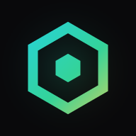
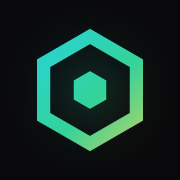

<!DOCTYPE html>
<!--
  Vize Masterhub — Engineering Semester Exam Preparation Hub (iOS / PWA edition)
  Install on iPhone/iPad: open in Safari → Share → "Add to Home Screen".
  Files: index.html · manifest.webmanifest · sw.js · icon-180/192/512.png (host together over HTTPS)
-->
<html lang="en" class="dark">
<head>
<meta charset="UTF-8" />
<meta name="viewport" content="width=device-width, initial-scale=1, viewport-fit=cover" />
<meta name="apple-mobile-web-app-capable" content="yes" />
<meta name="mobile-web-app-capable" content="yes" />
<meta name="apple-mobile-web-app-status-bar-style" content="black-translucent" />
<meta name="apple-mobile-web-app-title" content="Vize Hub" />
<meta name="application-name" content="Vize Hub" />
<meta name="theme-color" content="#09090b" />
<meta name="format-detection" content="telephone=no" />
<title>Vize Masterhub</title>
<link rel="manifest" href="manifest.webmanifest" />
<link rel="apple-touch-icon" href="icon-180.png" />
<link rel="icon" type="image/png" href="icon-192.png" />
<link rel="preconnect" href="https://fonts.googleapis.com">
<link rel="preconnect" href="https://fonts.gstatic.com" crossorigin>
<link href="https://fonts.googleapis.com/css2?family=Inter:wght@400;500;600;700&family=JetBrains+Mono:wght@400;500;600&display=swap" rel="stylesheet">
<script src="https://cdn.tailwindcss.com/3.4.16"></script>
<script>
  tailwind.config = {
    darkMode: 'class',
    theme: { extend: { fontFamily: {
      sans: ['Inter', '-apple-system', 'BlinkMacSystemFont', 'ui-sans-serif', 'system-ui', 'sans-serif'],
      mono: ['"JetBrains Mono"', 'ui-monospace', 'SFMono-Regular', 'monospace']
    } } }
  };
</script>
<script src="https://unpkg.com/lucide@0.460.0/dist/umd/lucide.min.js"></script>
<style type="text/tailwindcss">
  @layer components {
    .card { @apply rounded-xl border border-zinc-800 bg-zinc-900/50 backdrop-blur-sm transition-all duration-200; }
    .card-hover { @apply hover:border-zinc-700 hover:bg-zinc-900/80 hover:shadow-[0_0_0_1px_rgba(63,63,70,.35),0_12px_40px_-16px_rgba(0,0,0,.8)]; }
    .btn { @apply inline-flex items-center justify-center gap-2 rounded-lg px-3 py-1.5 text-sm font-medium transition-all duration-150 select-none active:scale-[.96] focus:outline-none focus-visible:ring-2 focus-visible:ring-zinc-500; }
    .btn-primary { @apply bg-zinc-100 text-zinc-900 hover:bg-white shadow-[0_0_24px_-6px_rgba(255,255,255,.35)]; }
    .btn-ghost { @apply text-zinc-400 hover:text-zinc-100 hover:bg-zinc-800/70; }
    .btn-outline { @apply border border-zinc-800 bg-zinc-900/40 text-zinc-300 hover:border-zinc-700 hover:bg-zinc-800/60 hover:text-zinc-100; }
    .input { @apply w-full rounded-lg border border-zinc-800 bg-zinc-950/70 px-3 py-2 text-sm text-zinc-200 placeholder-zinc-600 transition focus:outline-none focus:border-zinc-600 focus:ring-1 focus:ring-zinc-600; }
    .kbd { @apply inline-flex items-center justify-center min-w-[18px] h-[18px] rounded border border-zinc-700 bg-zinc-800/80 px-1 font-mono text-[10px] leading-none text-zinc-400; }
    .label { @apply text-[11px] font-medium uppercase tracking-wider text-zinc-500; }
    .chip { @apply inline-flex items-center gap-1.5 rounded-full border border-zinc-800 bg-zinc-900/70 px-2.5 py-1 text-xs text-zinc-400; }
    .h-title { @apply text-sm font-semibold text-zinc-100 tracking-tight; }
  }
</style>
<style>
  html { touch-action: manipulation; -webkit-text-size-adjust: 100%; }
  html, body { background: #09090b; overscroll-behavior: none; }
  body { -webkit-tap-highlight-color: transparent; }
  button, [data-action] { -webkit-user-select: none; user-select: none; -webkit-touch-callout: none; cursor: pointer; }
  .app-h { height: 100vh; height: 100dvh; }
  ::selection { background: rgba(34, 211, 238, .25); }
  ::-webkit-scrollbar { width: 8px; height: 8px; }
  ::-webkit-scrollbar-track { background: transparent; }
  ::-webkit-scrollbar-thumb { background: #27272a; border-radius: 8px; }
  .grid-bg {
    background-image: linear-gradient(rgba(255,255,255,.03) 1px, transparent 1px),
                      linear-gradient(90deg, rgba(255,255,255,.03) 1px, transparent 1px);
    background-size: 32px 32px;
    mask-image: radial-gradient(ellipse at center, black 30%, transparent 80%);
    -webkit-mask-image: radial-gradient(ellipse at center, black 30%, transparent 80%);
  }

  /* iOS safe areas (notch, Dynamic Island, home indicator) */
  .safe-top { padding-top: env(safe-area-inset-top); }
  .safe-top-pad { padding-top: max(1.25rem, env(safe-area-inset-top)); }
  .safe-bottom { padding-bottom: env(safe-area-inset-bottom); }
  .safe-bottom-pad { padding-bottom: max(1.25rem, env(safe-area-inset-bottom)); }
  .safe-x { padding-left: env(safe-area-inset-left); padding-right: env(safe-area-inset-right); }
  .view-pad { padding-bottom: calc(6.5rem + env(safe-area-inset-bottom)); }
  .toast-pos { bottom: calc(5.5rem + env(safe-area-inset-bottom)); }
  @media (min-width: 1024px) {
    .view-pad { padding-bottom: 2rem; }
    .toast-pos { bottom: 1rem; }
  }
  /* Prevent iOS auto-zoom on input focus */
  @media (max-width: 1023px) { input, select, textarea { font-size: 16px !important; } }
  /* Touch devices: no hover-reveal, no keyboard hints */
  @media (hover: none) {
    .touch-show { opacity: 1 !important; }
    .kbd:not(.kbd-keep) { display: none !important; }
    .hide-touch { display: none !important; }
  }

  .fade-in { animation: fadeIn .28s ease-out both; }
  @keyframes fadeIn { from { opacity: 0; transform: translateY(6px); } to { opacity: 1; transform: none; } }
  .pop-in { animation: popIn .2s ease-out both; }
  @keyframes popIn { from { opacity: 0; transform: scale(.97); } to { opacity: 1; transform: none; } }
  .toast-in { animation: toastIn .25s ease-out both; }
  @keyframes toastIn { from { opacity: 0; transform: translateY(10px) scale(.98); } to { opacity: 1; transform: none; } }

  /* Pomodoro pulse ring */
  .js-t-wrap .pulse-target { border-radius: 9999px; }
  .js-t-wrap.is-running .pulse-target { animation: pulseRing 2.4s ease-out infinite; }
  @keyframes pulseRing {
    0% { box-shadow: 0 0 0 0 var(--pulse, rgba(34,211,238,.35)); }
    80%, 100% { box-shadow: 0 0 0 22px rgba(0,0,0,0); }
  }
  .js-t-wrap.is-running .ring-glow { filter: drop-shadow(0 0 6px var(--pulse, rgba(34,211,238,.5))); }

  /* Flashcards */
  .flip { perspective: 1400px; }
  .flip-inner { position: relative; transition: transform .55s cubic-bezier(.2,.8,.2,1); transform-style: preserve-3d; -webkit-transform-style: preserve-3d; }
  .flip.flipped .flip-inner { transform: rotateY(180deg); }
  .face { position: absolute; inset: 0; backface-visibility: hidden; -webkit-backface-visibility: hidden; }
  .face.back { transform: rotateY(180deg); }

  .no-scrollbar::-webkit-scrollbar { display: none; }
  .no-scrollbar { scrollbar-width: none; }
  .scroll-touch { -webkit-overflow-scrolling: touch; overscroll-behavior: contain; }
  input[type="date"] { -webkit-appearance: none; appearance: none; min-height: 2.5rem; }
  input[type="date"]::-webkit-calendar-picker-indicator { filter: invert(.7); cursor: pointer; }
  input[type="date"]::-webkit-date-and-time-value { text-align: left; }
  select { -webkit-appearance: none; appearance: none;
    background-image: url("data:image/svg+xml,%3Csvg xmlns='http://www.w3.org/2000/svg' width='16' height='16' viewBox='0 0 24 24' fill='none' stroke='%2371717a' stroke-width='2'%3E%3Cpath d='m6 9 6 6 6-6'/%3E%3C/svg%3E");
    background-repeat: no-repeat; background-position: right .6rem center; padding-right: 2rem !important; }
</style>
</head>
<body class="bg-zinc-950 text-zinc-300 font-sans antialiased">

<div class="app-h flex overflow-hidden">
  <!-- Mobile backdrop -->
  <div id="sb-backdrop" data-action="sidebar" class="fixed inset-0 z-30 bg-black/60 backdrop-blur-sm opacity-0 pointer-events-none transition-opacity lg:hidden"></div>
  <!-- Sidebar -->
  <aside id="sidebar" class="safe-top fixed inset-y-0 left-0 z-40 w-72 -translate-x-full transition-transform duration-300 border-r border-zinc-800/80 bg-zinc-950/95 backdrop-blur-xl lg:static lg:translate-x-0 lg:bg-zinc-950"></aside>
  <!-- Main -->
  <main id="main" class="scroll-touch relative flex-1 min-w-0 overflow-y-auto">
    <header id="header" class="safe-top sticky top-0 z-20 border-b border-zinc-800/80 bg-zinc-950/80 backdrop-blur-xl"></header>
    <div id="view" class="safe-x view-pad mx-auto max-w-7xl px-4 sm:px-6 lg:px-8 pt-5 lg:pt-8"></div>
  </main>
</div>

<!-- Bottom tab bar (phones / tablets) -->
<nav id="tabbar" class="safe-bottom lg:hidden fixed inset-x-0 bottom-0 z-30 border-t border-zinc-800/80 bg-zinc-950/85 backdrop-blur-xl"></nav>

<!-- Cheat sheet slide-over -->
<div id="drawer-root" class="fixed inset-0 z-[60] pointer-events-none">
  <div id="drawer-bg" data-action="drawer" class="absolute inset-0 bg-black/60 backdrop-blur-[2px] opacity-0 transition-opacity duration-300"></div>
  <aside id="drawer" class="safe-top safe-bottom absolute right-0 top-0 h-full w-full max-w-md translate-x-full transition-transform duration-300 ease-out border-l border-zinc-800 bg-zinc-950 flex flex-col shadow-2xl"></aside>
</div>

<!-- Focus mode overlay -->
<div id="focus" class="fixed inset-0 z-50 hidden bg-zinc-950"></div>

<!-- Modal -->
<div id="modal-root" class="fixed inset-0 z-[70] hidden"></div>

<!-- Toasts -->
<div id="toasts" class="toast-pos fixed left-4 right-4 sm:left-auto sm:right-4 z-[80] flex flex-col items-center sm:items-end gap-2 pointer-events-none"></div>

<input type="file" id="import-file" accept="application/json,.json" class="hidden" />

<script>
/* =========================================================================
   DATA
   ========================================================================= */
const CATS = {
  analytical: {
    label: 'Analytical & Problem-Heavy', short: 'Analytical', icon: 'sigma',
    text: 'text-cyan-400', bg: 'bg-cyan-500/10', border: 'border-cyan-500/30', bar: 'bg-cyan-400', dot: 'bg-cyan-400',
    hex: '#22d3ee', rgba: 'rgba(34,211,238,.35)',
    L: { sheet: 'Formula Sheet', traps: 'Common Trap Notes', checklist: 'Step-by-Step Problem Checklist', cards: 'Concept Cards' },
    clIcon: 'list-ordered', desc: 'Formula drawers, step-by-step problem checklists & trap notes.'
  },
  design: {
    label: 'Design, Hardware & Logic', short: 'Design & HW', icon: 'drafting-compass',
    text: 'text-emerald-400', bg: 'bg-emerald-500/10', border: 'border-emerald-500/30', bar: 'bg-emerald-400', dot: 'bg-emerald-400',
    hex: '#34d399', rgba: 'rgba(52,211,153,.35)',
    L: { sheet: 'Kinematic / Mobility & Design Notes', traps: 'Design Pitfalls', checklist: 'Component Checklist', cards: 'Diagram & Concept Flashcards' },
    clIcon: 'cpu', desc: 'Concept flashcards, component checklists & kinematic/mobility notes.'
  },
  theory: {
    label: 'Theoretical, Materials & Regulations', short: 'Theory & Regs', icon: 'book-open-text',
    text: 'text-amber-400', bg: 'bg-amber-500/10', border: 'border-amber-500/30', bar: 'bg-amber-400', dot: 'bg-amber-400',
    hex: '#fbbf24', rgba: 'rgba(251,191,36,.35)',
    L: { sheet: 'Key Terms & Regulation Summaries', traps: 'Commonly Confused', checklist: 'Review Checklist', cards: 'Flashcard Quiz' },
    clIcon: 'scroll-text', desc: 'Key term definitions, regulation summaries & flashcard quiz mode.'
  }
};

const COURSES = [
  /* ---------------- ANALYTICAL ---------------- */
  {
    id: 'thermo', cat: 'analytical', name: 'Thermodynamics I', icon: 'thermometer', exam: '2026-11-10', target: 60,
    topics: ['Basic Concepts, Systems & Units', 'Pure Substances & Property Tables', 'Ideal Gas Law & Compressibility Factor',
      'Energy Transfer: Heat, Work & Boundary Work', 'First Law — Closed Systems', 'First Law — Control Volumes (Steady-Flow Devices)',
      'Second Law, Heat Engines & Refrigerators', 'Carnot Cycle & Reversibility', 'Entropy & Isentropic Processes'],
    sheet: [
      ['First Law (closed)', 'Q − W = ΔU + ΔKE + ΔPE'],
      ['Boundary Work', 'W_b = ∫ P dV   |   isobaric: P(V₂ − V₁)'],
      ['Polytropic (n ≠ 1)', 'W_b = (P₂V₂ − P₁V₁) / (1 − n)'],
      ['Isothermal Ideal Gas', 'W_b = P₁V₁ ln(V₂/V₁) = mRT ln(V₂/V₁)'],
      ['Ideal Gas', 'Pv = RT   |   PV = mRT   |   R = Rᵤ / M'],
      ['Specific Heats', 'Δu = c_v ΔT   |   Δh = c_p ΔT   |   c_p − c_v = R   |   k = c_p / c_v'],
      ['Quality (sat. mixture)', 'x = m_g / m_t   |   v = v_f + x·v_fg   (same for u, h, s)'],
      ['Steady-Flow Energy', 'Q̇ − Ẇ = Σṁ(h + V²/2 + gz)_out − Σṁ(h + V²/2 + gz)_in'],
      ['Mass Flow', 'ṁ = ρ·V·A = V·A / v'],
      ['Thermal Efficiency', 'η_th = W_net / Q_H = 1 − Q_L / Q_H'],
      ['COP', 'COP_R = Q_L / W_net   |   COP_HP = Q_H / W_net = COP_R + 1'],
      ['Carnot Limits', 'η_rev = 1 − T_L / T_H   |   COP_R,rev = 1 / (T_H/T_L − 1)'],
      ['Entropy (ideal gas)', 'Δs = c_p ln(T₂/T₁) − R ln(P₂/P₁)']
    ],
    traps: ['Always use absolute temperature (K) in ideal-gas and Carnot relations.',
      'Sign convention: heat INTO the system (+), work BY the system (+). Match your textbook.',
      'Throttling valve: h₁ = h₂ (isenthalpic) — it is not isothermal unless the fluid is an ideal gas.',
      'Determine the phase first (compare P or T with saturation values) before reading any table.',
      'V²/2 gives J/kg — divide by 1000 before adding to h in kJ/kg.',
      'kPa·m³ = kJ. Mixing Pa and kPa is the #1 unit error.',
      'Rigid tank ⇒ W_b = 0. Insulated / adiabatic ⇒ Q = 0.'],
    checklist: ['Sketch the system and draw the boundary', 'Classify: closed system or control volume?',
      'Tabulate states: two independent properties per state', 'Write assumptions (steady, ΔKE≈0, ΔPE≈0, ideal gas, adiabatic…)',
      'Identify the phase at each state from saturation tables', 'Apply conservation of mass',
      'Apply the energy balance (and entropy balance if needed)', 'Solve, then check units and signs',
      'Sanity-check: is the magnitude physically reasonable?'],
    cards: [
      ['What is a pure substance?', 'A substance with a fixed, uniform chemical composition throughout (e.g., water, N₂, air without phase separation).'],
      ['State postulate', 'The state of a simple compressible system is fixed by two independent intensive properties.'],
      ['Kelvin–Planck statement', 'No cyclic heat engine can produce net work while exchanging heat with a single reservoir — η is always < 100%.'],
      ['Clausius statement', 'Heat cannot flow spontaneously from a colder body to a hotter body without external work input.'],
      ['When is the ideal-gas model valid?', 'At low pressure and high temperature relative to the critical point (compressibility factor Z ≈ 1).']
    ]
  },
  {
    id: 'signals', cat: 'analytical', name: 'Signal Processing', icon: 'audio-waveform', exam: '2026-11-12', target: 60,
    topics: ['Signal Classification (CT/DT, Energy/Power, Even/Odd)', 'Elementary Signals (Step, Impulse, Exponentials, Sinusoids)',
      'Signal Transformations (Shift, Scale, Reversal)', 'System Properties (Linearity, Time-Invariance, Causality, Stability)',
      'LTI Systems & the Convolution Sum', 'Convolution Integral', 'Difference & Differential Equations',
      'Fourier Series of Periodic Signals', 'Continuous-Time Fourier Transform', 'Sampling Theorem & Aliasing'],
    sheet: [
      ['Convolution Sum', 'y[n] = Σₖ x[k]·h[n − k]'],
      ['Convolution Integral', 'y(t) = ∫ x(τ)·h(t − τ) dτ'],
      ['Euler', 'e^{jθ} = cos θ + j sin θ'],
      ['Energy / Power', 'E = ∫|x(t)|² dt   |   P = lim (1/2T) ∫₋ᵀᵀ |x(t)|² dt'],
      ['Even / Odd Parts', 'x_e = ½[x(t) + x(−t)]   |   x_o = ½[x(t) − x(−t)]'],
      ['Fourier Series', 'x(t) = Σ a_k e^{jkω₀t}   |   a_k = (1/T) ∫_T x(t) e^{−jkω₀t} dt'],
      ['Fourier Transform', 'X(jω) = ∫ x(t) e^{−jωt} dt   |   x(t) = (1/2π) ∫ X(jω) e^{jωt} dω'],
      ['Key FT Pairs', 'δ(t) ↔ 1   |   e^{−at}u(t) ↔ 1/(a + jω)   |   rect ↔ sinc'],
      ['FT Properties', 'x(t − t₀) ↔ e^{−jωt₀}X   |   x * h ↔ X·H   |   dx/dt ↔ jωX'],
      ['BIBO Stability (LTI)', 'Σ |h[n]| < ∞   |   ∫ |h(t)| dt < ∞'],
      ['Causality (LTI)', 'h[n] = 0 for n < 0'],
      ['Nyquist', 'f_s > 2·f_max  (no aliasing)'],
      ['DT Periodicity', 'cos(ω₀n) is periodic iff ω₀ / 2π = m / N is rational']
    ],
    traps: ['x(2t − 3): shift by 3 first, then compress by 2 — or rewrite as x(2(t − 1.5)).',
      'In convolution, flip h(τ) → h(−τ), then shift by t. Track every overlap interval.',
      'Sampling at exactly f_s = 2f_max can still lose a sinusoid (samples at zero crossings).',
      'A sum of periodic CT signals is periodic only if the period ratio is rational.',
      'x[2n] drops samples (decimation) — the operation is not reversible.',
      'Check linearity with BOTH additivity and homogeneity — y = 2x + 3 is NOT linear.'],
    checklist: ['Write the signal expressions & sketch them', 'Identify the tool asked (convolution, FS, FT, property test…)',
      'Convolution: flip & shift h, list the overlap intervals', 'Set the integration/summation limits for each interval',
      'Evaluate and simplify (use known pairs/tables)', 'Check continuity between interval boundaries',
      'Verify with special values (t → ∞, t = 0, DC gain)'],
    cards: [
      ['Time-invariant system?', 'A time shift of the input produces the same shift in the output: x(t − t₀) → y(t − t₀).'],
      ['Convolution with δ(t − t₀)?', 'It shifts the signal: x(t) * δ(t − t₀) = x(t − t₀).'],
      ['Aliasing', 'When f_s < 2f_max, high-frequency components fold onto lower frequencies and become indistinguishable.'],
      ['Memoryless system', 'The output at time t depends only on the input at the same time t.'],
      ["Parseval's relation", 'Energy is preserved: ∫|x(t)|² dt = (1/2π) ∫|X(jω)|² dω.']
    ]
  },
  {
    id: 'sysmod', cat: 'analytical', name: 'System Modeling and Analysis', icon: 'workflow', exam: '2026-11-16', target: 50,
    topics: ['Modeling Philosophy & Lumped-Parameter Elements', 'Mechanical Translational Systems', 'Mechanical Rotational Systems & Gear Trains',
      'Electrical Systems (RLC, Kirchhoff Laws)', 'Electromechanical Systems (DC Motor)', 'Fluid & Thermal System Analogies',
      'Laplace Transform & Transfer Functions', 'Block Diagram Reduction', 'State-Space Representation', 'First & Second-Order Time Response'],
    sheet: [
      ['Mass–Spring–Damper', 'm·ẍ + c·ẋ + k·x = F(t)'],
      ['Rotational', 'J·θ̈ + B·θ̇ + K·θ = T(t)'],
      ['Gear Train', 'θ₁/θ₂ = N₂/N₁   |   J_eq = J₁ + J₂(N₁/N₂)²'],
      ['RLC Elements', 'v_R = R·i   |   v_L = L di/dt   |   i_C = C dv/dt'],
      ['DC Motor', 'T = K_t·i   |   e_b = K_b·ω   |   V = R·i + L di/dt + K_b·ω'],
      ['Laplace Derivatives', 'ℒ{ẋ} = sX − x(0)   |   ℒ{ẍ} = s²X − s·x(0) − ẋ(0)'],
      ['Transfer Function', 'G(s) = Y(s) / U(s) with zero initial conditions'],
      ['Negative Feedback', 'T(s) = G / (1 + G·H)'],
      ['State Space', 'ẋ = Ax + Bu,  y = Cx + Du   |   G(s) = C(sI − A)⁻¹B + D'],
      ['1st Order', 'G = K / (τs + 1): 63.2% at t = τ, settles ≈ 4τ'],
      ['2nd Order', 'G = ωₙ² / (s² + 2ζωₙs + ωₙ²)'],
      ['Overshoot / Settling', 'M_p = e^{−ζπ/√(1−ζ²)}   |   t_s ≈ 4/(ζωₙ)   |   t_p = π/ω_d'],
      ['Final Value Theorem', 'y(∞) = lim_{s→0} s·Y(s)  (stable systems only)']
    ],
    traps: ['The final value theorem is invalid if sY(s) has poles in the RHP or on the jω-axis.',
      'Reflected inertia scales with the SQUARE of the gear ratio.',
      'FBD sign errors: spring/damper forces oppose relative displacement/velocity.',
      'Transfer functions assume zero initial conditions.',
      'Damping ratio ζ (dimensionless) ≠ damping coefficient c (N·s/m).',
      'Moving a summing junction or pickoff point past a block needs a compensating block.'],
    checklist: ['Define inputs, outputs & coordinates', 'Draw free-body / circuit diagrams', 'Write governing equations (Newton / Kirchhoff)',
      'Apply the Laplace transform (zero ICs)', 'Form the transfer function or state-space model', 'Reduce the block diagram if needed',
      'Find poles, ζ, ωₙ, time constants', 'Compute the requested response metrics'],
    cards: [
      ['Force–voltage analogy', 'Mass ↔ inductance, damper ↔ resistance, spring ↔ 1/capacitance, force ↔ voltage, velocity ↔ current.'],
      ['What is a state variable?', 'A minimal set of variables whose values at t₀, together with the inputs, determine the system response for all t ≥ t₀.'],
      ['Underdamped condition', '0 < ζ < 1 → complex-conjugate poles and an oscillatory response with overshoot.'],
      ['Poles of a system', 'Roots of the characteristic equation (denominator of G(s)); they determine stability and transient response.'],
      ['Order of a system', 'The number of independent energy-storage elements, i.e. the number of state variables.']
    ]
  },

  /* ---------------- DESIGN & HARDWARE ---------------- */
  {
    id: 'mechatronic', cat: 'design', name: 'Mechatronic System Design I', icon: 'cpu', exam: '2026-11-11', target: 40,
    topics: ['Mechatronic Design Process & V-Model', 'Requirements, Specifications & Concept Generation', 'Microcontroller Architecture, GPIO & Interrupts',
      'Sensor Interfacing & Signal Conditioning (Op-Amps, Filters)', 'ADC / DAC Conversion & Sampling', 'PWM Generation & Power Electronics',
      'Actuators: DC, Stepper & Servo Motors', 'Motor Drivers & H-Bridges', 'Feedback Control Fundamentals (PID)', 'System Integration, Testing & BOM'],
    sheet: [
      ['PWM Average Voltage', 'D = t_on / T   |   V_avg = D · V_s'],
      ['ADC Resolution', 'LSB = V_ref / 2ⁿ   |   code = ⌊V_in / LSB⌋'],
      ['Inverting Amp', 'V_o = −(R_f / R_in) · V_in'],
      ['Non-inverting Amp', 'V_o = (1 + R_f / R_g) · V_in'],
      ['RC Low-pass Cutoff', 'f_c = 1 / (2π·R·C)'],
      ['Voltage Divider', 'V_out = V_in · R₂ / (R₁ + R₂)'],
      ['Motor Torque & Power', 'T = K_t · i   |   P = T · ω'],
      ['Gearbox', 'T_out = N · η · T_in   |   ω_out = ω_in / N'],
      ['Stepper Resolution', 'step angle = 360° / steps-per-rev  (÷ microsteps)'],
      ['PID Law', 'u(t) = K_p·e + K_i ∫e dt + K_d·de/dt'],
      ['LED Resistor', 'R = (V_s − V_f) / I_f']
    ],
    traps: ['H-bridge shoot-through: never turn on both switches of the same leg — add dead-time.',
      'Inductive loads (motors, relays, solenoids) need flyback diodes.',
      'Floating digital inputs read random values — use pull-up / pull-down resistors.',
      'Missing common ground between the logic and power supplies.',
      'No anti-aliasing filter before the ADC ⇒ aliased noise in your data.',
      'Sizing a motor on nominal torque only — check peak torque & speed, add a 1.5–2× safety factor.',
      'Powering motors from the MCU 5 V pin ⇒ brown-outs and random resets.'],
    checklist: ['Microcontroller selected (I/O count, timers, ADC channels)', 'Power budget & supply/regulator sized',
      'Motor driver rated for stall current', 'Flyback / protection diodes placed', 'Sensors chosen & signal conditioning designed',
      'Pull-up / pull-down resistors on all inputs', 'Decoupling capacitors (100 nF) at every IC', 'Common ground & wiring diagram verified',
      'Emergency stop / limit switches included', 'Bill of materials (BOM) with costs'],
    cards: [
      ['What makes a system "mechatronic"?', 'Synergistic integration of mechanical engineering, electronics, control and computing from the start of the design.'],
      ['Open-loop vs closed-loop', 'Open-loop has no output feedback; closed-loop measures the output and corrects the error.'],
      ['Why PWM for motor speed?', 'Switching fully on/off keeps transistor losses low, while motor inductance averages the voltage.'],
      ['Role of an H-bridge', 'Lets a single supply drive a DC motor in both directions by reversing the current path.'],
      ['Interrupt vs polling', 'Interrupts react immediately via an ISR; polling repeatedly checks in the main loop and wastes cycles.'],
      ['Servo vs stepper', 'Servo: closed-loop with position feedback. Stepper: open-loop discrete steps, high holding torque, may lose steps.']
    ]
  },
  {
    id: 'mechanism', cat: 'design', name: 'Mechanism Design I', icon: 'cog', exam: '2026-11-13', target: 40,
    topics: ['Kinematic Fundamentals: Links, Joints & Pairs', 'Kinematic Chains, Inversions & Mechanism Types', 'Degrees of Freedom (Gruebler / Kutzbach)',
      'Grashof Condition & Four-Bar Classification', 'Position Analysis — Graphical & Vector Loop', 'Analytical Position Analysis (Freudenstein)',
      "Instant Centers & Kennedy's Theorem", 'Velocity Analysis (Relative Velocity Method)', 'Acceleration Analysis & Coriolis Component',
      'Slider–Crank, Quick-Return & Transmission Angle'],
    sheet: [
      ['Mobility (Kutzbach)', 'M = 3(L − 1) − 2J₁ − J₂'],
      ['Grashof Condition', 'S + L ≤ P + Q  →  at least one link rotates fully'],
      ['Number of ICs', 'N = n(n − 1) / 2'],
      ["Kennedy's Theorem", 'Any 3 bodies in planar motion share 3 ICs lying on one straight line'],
      ['Vector Loop (4-bar)', 'R₂ + R₃ − R₄ − R₁ = 0'],
      ['Freudenstein', 'K₁cos θ₄ − K₂cos θ₂ + K₃ = cos(θ₂ − θ₄);  K₁ = d/a, K₂ = d/c, K₃ = (a² − b² + c² + d²)/2ac'],
      ['Relative Velocity', 'V_B = V_A + V_BA,  |V_BA| = ω·r_BA  (⊥ AB)'],
      ['Relative Acceleration', 'A_B = A_A + α × r_BA − ω²·r_BA'],
      ['Coriolis', 'a_cor = 2 ω × v_rel  (point sliding on a rotating link)'],
      ['Transmission Angle', 'Keep μ within ≈ 40°–140°;  μ = 90° is ideal'],
      ['Time Ratio (Quick Return)', 'TR = α / β  (crank angle of forward vs return stroke)']
    ],
    traps: ['A pin joining k links counts as (k − 1) full joints.', 'Always include the ground (frame) as a link.',
      'A slider (prismatic) is a full joint J₁; rolling-with-slipping contact is a half joint J₂.',
      'Kutzbach can fail for special geometries (overconstrained linkages, parallelograms).',
      'Grashof only tells rotatability; crank-rocker vs double-crank depends on which link is grounded.',
      'Coriolis appears only when a point slides along a rotating link — rotate v_rel 90° in the ω direction.',
      'Position solutions have two branches (open / crossed) — pick the right one.'],
    checklist: ['Number all links (ground = 1)', 'Identify each joint: full (J₁) or half (J₂)', 'Apply Kutzbach to get M',
      'Check Grashof (S + L vs P + Q)', 'Classify by ground link (crank-rocker, double crank…)', 'Write vector-loop equations',
      'Solve position (choose open / crossed branch)', 'Velocity: ICs or relative-velocity polygon',
      'Acceleration polygon incl. normal, tangential & Coriolis terms'],
    cards: [
      ['Lower vs higher pair', 'Lower pair: surface contact (revolute, prismatic). Higher pair: point/line contact (cam, gear teeth).'],
      ['Grashof crank-rocker', 'Shortest link adjacent to the ground ⇒ the shortest link is the crank; the opposite link rocks.'],
      ['Double-crank (drag link)', 'A Grashof linkage with the shortest link as ground — both side links rotate fully.'],
      ['Toggle position', 'Two links become collinear: mechanical advantage → ∞ and output velocity → 0.'],
      ['Inversion', 'Obtained by fixing a different link of the same chain; relative motion between links is unchanged.'],
      ['Instant center', 'The point where two bodies have zero relative velocity at that instant.']
    ]
  },
  {
    id: 'sensors', cat: 'design', name: 'Sensor Systems', icon: 'radar', exam: '2026-11-17', target: 40,
    topics: ['Measurement System Architecture', 'Static Characteristics (Sensitivity, Linearity, Hysteresis, Resolution)',
      'Dynamic Characteristics (1st & 2nd Order Sensors)', 'Errors, Uncertainty & Calibration', 'Resistive Sensors & Wheatstone Bridge',
      'Strain Gauges & Load Cells', 'Temperature Sensors (RTD, Thermistor, Thermocouple)', 'Capacitive & Inductive Sensors (LVDT)',
      'Optical Sensors & Encoders', 'Proximity, Hall-Effect & Ultrasonic Sensors'],
    sheet: [
      ['Sensitivity', 'S = Δoutput / Δinput  (slope of calibration curve)'],
      ['Non-linearity', '%NL = max deviation from best-fit line / FSO × 100'],
      ['Wheatstone Bridge', 'V_o = V_s [R₃/(R₃ + R₄) − R₂/(R₁ + R₂)]  — balance depends on labeling'],
      ['Gauge Factor', 'GF = (ΔR/R) / ε   (metallic ≈ 2)'],
      ['Quarter Bridge', 'V_o ≈ V_s · GF · ε / 4'],
      ['RTD', 'R(T) = R₀(1 + αΔT);  Pt100: α ≈ 0.00385 /°C'],
      ['Thermistor (β model)', 'R = R₀ · exp[β(1/T − 1/T₀)]   (T in K)'],
      ['Thermocouple', 'V ≈ S·(T_hot − T_ref)  — needs cold-junction compensation'],
      ['1st-Order Response', 'y(t) = y_∞(1 − e^{−t/τ}):  63.2% at τ, ≈ 99% at 5τ'],
      ['Uncertainty (RSS)', 'u_c = √( Σ (∂f/∂xᵢ · uᵢ)² )'],
      ['Encoder Resolution', 'Δθ = 360° / (N · 4)  with quadrature decoding'],
      ['Capacitance', 'C = ε₀·εᵣ·A / d']
    ],
    traps: ['Accuracy (closeness to the true value) ≠ precision (repeatability).',
      'Resolution ≠ accuracy: a 0.01 mm display can still be 0.1 mm off.',
      'The bridge balance condition depends on how R₁…R₄ are labeled — always check the figure.',
      'NTC thermistors are highly non-linear and their resistance DECREASES with temperature.',
      'Forgetting temperature compensation for strain gauges (use a dummy gauge or half bridge).',
      'Quadrature counts both edges of both channels ⇒ ×4 resolution.'],
    checklist: ['Measurand & range defined', 'Required resolution & accuracy', 'Bandwidth / response time (τ)',
      'Output type (analog V, 4–20 mA, digital, frequency)', 'Signal conditioning (bridge, amplifier, filter)',
      'Environment: temperature, humidity, EMI, vibration', 'Calibration procedure', 'Interface to MCU (ADC bits, protocol)', 'Cost, size & power'],
    cards: [
      ['Hysteresis', 'Different outputs for the same input depending on whether the input is increasing or decreasing.'],
      ['Active vs passive sensor', 'Active (self-generating) produces its own signal, e.g. thermocouple; passive needs excitation, e.g. RTD, strain gauge.'],
      ['LVDT principle', 'A movable core changes the coupling between a primary and two secondaries; the differential output ∝ displacement.'],
      ['Seebeck effect', 'A voltage proportional to the temperature difference is generated across a junction of two dissimilar metals.'],
      ['Dead band', 'The range of input over which there is no change in output.'],
      ['Why a half / full bridge?', 'Higher sensitivity and cancellation of temperature effects on the gauges.']
    ]
  },

  /* ---------------- THEORY & REGULATIONS ---------------- */
  {
    id: 'materials', cat: 'theory', name: 'Materials Science', icon: 'atom', exam: '2026-11-18', target: 30,
    topics: ['Atomic Structure & Interatomic Bonding', 'Crystal Structures (BCC, FCC, HCP)', 'Crystallographic Directions & Planes (Miller Indices)',
      'Imperfections: Point, Line & Planar Defects', "Diffusion (Fick's Laws)", 'Mechanical Properties: Stress–Strain Behaviour',
      'Hardness, Toughness & Ductility', 'Dislocations & Strengthening Mechanisms', 'Failure: Fracture, Fatigue & Creep',
      'Phase Diagrams & the Lever Rule', 'Iron–Carbon (Fe–Fe₃C) System'],
    sheet: [
      ['Atomic Packing Factor', 'FCC 0.74  |  HCP 0.74  |  BCC 0.68  |  SC 0.52'],
      ['Lattice Parameter', 'FCC: a = 2R√2   |   BCC: a = 4R / √3'],
      ['Theoretical Density', 'ρ = n·A / (V_c · N_A)'],
      ['Coordination Number', 'SC 6  |  BCC 8  |  FCC 12  |  HCP 12'],
      ["Fick's 1st Law", 'J = −D · dC/dx'],
      ['Diffusivity', 'D = D₀ · exp(−Q_d / RT)'],
      ['Eng. Stress / Strain', 'σ = F / A₀   |   ε = Δl / l₀   |   σ = E·ε'],
      ["Poisson's Ratio", 'ν = −ε_lateral / ε_axial'],
      ['Hall–Petch', 'σ_y = σ₀ + k_y · d^(−1/2)'],
      ['Lever Rule', 'W_L = (C_α − C₀)/(C_α − C_L)   |   W_α = (C₀ − C_L)/(C_α − C_L)'],
      ['Fe–C Eutectoid', '0.76 wt% C @ 727 °C:  γ → α + Fe₃C (pearlite)'],
      ['Fe–C Eutectic', '4.30 wt% C @ 1147 °C:  L → γ + Fe₃C']
    ],
    traps: ['Toughness = area under the whole σ–ε curve; resilience = area under the elastic part only.',
      'Strength ≠ hardness ≠ stiffness (E).',
      'Lever rule uses the OPPOSITE arm: the fraction of α uses the distance from C₀ to the liquid boundary.',
      'Miller indices: reciprocals of intercepts, clear fractions; shift the origin if the plane passes through it.',
      'Engineering stress uses the original area A₀; true stress uses the instantaneous area.',
      'Use absolute temperature (K) in the Arrhenius diffusion equation.'],
    checklist: ['Crystal structures: compute APF & density', 'Miller indices for directions & planes', 'Defect types & their effects',
      "Diffusion calculations (Fick I & II with erf)", 'Read a σ–ε curve: E, σ_y (0.2%), UTS, %EL',
      'Strengthening: grain size, solid solution, strain hardening', 'Phase diagram: phases, compositions, lever rule',
      'Fe–Fe₃C microstructures (hypo / hyper-eutectoid)'],
    cards: [
      ['Ductility', 'The degree of plastic deformation sustained before fracture (%EL or %RA).'],
      ['Slip system', 'A slip plane + slip direction pair (most densely packed). FCC has 12.'],
      ['Vacancy', 'Point defect: a normally occupied lattice site that is empty.'],
      ['Edge vs screw dislocation', 'Edge: Burgers vector ⊥ dislocation line. Screw: Burgers vector ∥ dislocation line.'],
      ['Pearlite', 'Lamellar mixture of ferrite (α) and cementite (Fe₃C) formed by the eutectoid reaction.'],
      ['Isomorphous system', 'Complete liquid and solid solubility of both components (e.g., Cu–Ni).'],
      ['Creep', 'Time-dependent permanent deformation under constant load, significant above ≈ 0.4 T_m.']
    ]
  },
  {
    id: 'ohs', cat: 'theory', name: 'Occupational Health and Safety I', icon: 'hard-hat', exam: '2026-11-19', target: 30,
    topics: ['Fundamental OHS Concepts (Hazard, Risk, Near Miss)', 'History of OHS & International Standards (ILO, ISO 45001)',
      'Turkish OHS Law No. 6331 — Scope & Principles', 'Employer Duties & Employee Rights / Obligations',
      'OHS Services: Specialists, Workplace Physicians & Committees', 'Workplace Hazard Classes',
      'Risk Assessment Methods (L-Matrix, Fine–Kinney)', 'Occupational Accidents & Diseases (Reporting)',
      'Physical Hazards: Noise, Vibration, Lighting, Thermal Comfort', 'PPE, Safety Signs & Emergency / Fire Planning'],
    sheet: [
      ['Law No. 6331 (2012)', 'Occupational Health & Safety Law — covers all public & private sector workplaces and workers, incl. apprentices & interns.'],
      ['Hazard ≠ Risk', 'Hazard: potential to cause harm. Risk: likelihood of harm × severity.'],
      ['Hierarchy of Controls', 'Elimination → Substitution → Engineering → Administrative → PPE (last resort)'],
      ['Hazard Classes', 'Less hazardous · Hazardous · Very hazardous (by NACE code communiqué)'],
      ['Risk Assessment Renewal', 'Very hazardous: 2 yrs · Hazardous: 4 yrs · Less hazardous: 6 yrs (sooner after major changes/accidents)'],
      ['OHS Specialist Classes', 'Class A → very hazardous · Class B → hazardous · Class C → less hazardous'],
      ['Training (minimum)', 'Very hazardous: 16 h / yr · Hazardous: 12 h / 2 yrs · Less hazardous: 8 h / 3 yrs'],
      ['OHS Committee', 'Required with 50+ employees and continuous work lasting > 6 months'],
      ['Accident Reporting', 'Notify SGK within 3 working days after an occupational accident'],
      ['L-Type Matrix', 'Risk = Probability × Severity  (5 × 5 grid)'],
      ['Fine–Kinney', 'R = Probability × Frequency × Severity;  R > 400 ⇒ stop work'],
      ['Noise Exposure (8 h)', 'Lower action 80 dB(A) · Upper action 85 dB(A) · Limit value 87 dB(A)'],
      ['Safety Sign Colours', 'Red: prohibition/fire · Blue: mandatory · Yellow: warning · Green: safe condition / first aid']
    ],
    traps: ['Hazard is the source; risk is its likelihood and consequence — a classic exam question.',
      'PPE is the LAST line of control, not the first.',
      'Near miss ≠ accident: no injury or damage, but it must still be recorded and investigated.',
      'Occupational disease results from repeated exposure over time, not a single event.',
      'Delegating to OHS professionals does NOT remove the employer\'s responsibility.',
      'Fine–Kinney uses three factors (P × F × S); the L-matrix uses two (P × S).'],
    checklist: ['Core definitions in Law 6331 (Art. 3)', 'Employer general obligations (Art. 4)', 'Right to refrain from work (Art. 13)',
      'Risk assessment steps & renewal periods', 'Training durations by hazard class', 'Accident / disease reporting deadlines',
      'Noise & vibration limit values', 'PPE categories & safety sign colours'],
    cards: [
      ['Near miss', 'An event that could have caused injury or damage but did not — a key leading indicator.'],
      ['Right to refrain from work (Art. 13)', 'Employees facing serious and imminent danger may request measures and refrain from work until they are taken, without loss of rights.'],
      ['Ergonomics', 'Designing work, tools and environment to fit human capabilities and limitations.'],
      ['Occupational disease', 'Illness caused by repeated exposure to work-related factors (e.g., noise-induced hearing loss, silicosis).'],
      ['Collective vs personal protection', 'Collective measures (guards, ventilation) protect everyone and take priority over individual PPE.'],
      ['Risk assessment steps', 'Hazard identification → risk analysis → evaluation → control measures → documentation → monitoring & review.']
    ]
  },
  {
    id: 'heritage', cat: 'theory', name: 'Conservation of Multi-Layered Historical Cities', icon: 'landmark', exam: '2026-11-20', target: 25,
    topics: ['Key Concepts: Heritage, Monument, Site & Urban Conservation', 'The Multi-Layered City (Palimpsest) Concept',
      'Evolution of Conservation Theory (Ruskin, Viollet-le-Duc, Boito, Riegl)', 'International Charters: Athens 1931 & Venice 1964',
      'Amsterdam Declaration 1975 & Integrated Conservation', 'Washington Charter 1987 & Historic Towns', 'Nara Document 1994: Authenticity',
      'UNESCO World Heritage & Historic Urban Landscape (2011)', 'Turkish Legislation: Law No. 2863 & Site (Sit) Categories',
      'Urban Archaeology & Interventions (Restoration, Reuse)', 'Case Studies: Istanbul Historic Peninsula, İzmir Kemeraltı, Smyrna'],
    sheet: [
      ['Palimpsest City', 'Urban fabric where successive historical layers overlap; earlier layers remain partly legible beneath later ones.'],
      ['Athens Charter (1931)', 'First international document on the restoration of historic monuments; respect for all periods.'],
      ['Venice Charter (1964)', 'ICOMOS founding text: authenticity, setting matters, additions must be distinguishable, restoration stops where conjecture begins.'],
      ['Amsterdam Declaration (1975)', 'European Architectural Heritage Year — introduced "integrated conservation" into planning.'],
      ['Washington Charter (1987)', 'ICOMOS Charter for the Conservation of Historic Towns and Urban Areas — the whole urban fabric, not single buildings.'],
      ['Nara Document (1994)', 'Authenticity is judged within its own cultural context; cultural diversity of heritage.'],
      ['HUL Recommendation (2011)', 'UNESCO Historic Urban Landscape: the city as a layering of cultural & natural values; managing change.'],
      ['Valletta Principles (2011)', 'ICOMOS-CIVVIH principles for safeguarding & managing historic cities, towns and urban areas.'],
      ['Law No. 2863 (1983)', 'Turkish Law on the Conservation of Cultural and Natural Property.'],
      ['Site (Sit) Types', 'Archaeological · Urban · Urban-Archaeological · Historic · Natural sites'],
      ['Intervention Spectrum', 'Maintenance → Consolidation → Restoration → Reconstruction → Adaptive Reuse']
    ],
    traps: ['Restoration ≠ reconstruction: reconstruction rebuilds lost parts, often with new material.',
      'The Venice Charter rejects stylistic unity — contributions of all periods should be respected.',
      'Authenticity (genuineness) vs integrity (wholeness / intactness) — both appear in UNESCO criteria.',
      'Washington Charter = historic TOWNS; Venice Charter = monuments & sites.',
      'HUL is a UNESCO Recommendation (2011), not an ICOMOS charter.'],
    checklist: ['Charters in chronological order with one key idea each', 'Definitions: authenticity, integrity, setting, buffer zone',
      'Theorists: Ruskin vs Viollet-le-Duc positions', 'Law 2863 structure & site categories',
      'Layers of a case city (e.g., Smyrna → Ottoman → Republican İzmir)', 'Intervention types with examples',
      'Integrated conservation & participatory planning'],
    cards: [
      ['Ruskin vs Viollet-le-Duc', 'Ruskin: anti-restoration, preserve as found. Viollet-le-Duc: restore to an ideal complete state, even one that never existed.'],
      ['Buffer zone', 'An area around a heritage property with use restrictions that add a layer of protection.'],
      ['Adaptive reuse', 'Giving a historic building a new, compatible function while retaining its significance.'],
      ['Integrated conservation', 'Making heritage conservation a core goal of urban & regional planning (Amsterdam 1975).'],
      ['Outstanding Universal Value', 'Cultural / natural significance so exceptional it transcends national boundaries — basis of World Heritage listing.'],
      ["Riegl's values", 'Age value, historical value and commemorative value vs present-day (use & art) values.']
    ]
  }
];

/* =========================================================================
   STATE & PERSISTENCE
   ========================================================================= */
const LS_KEY = 'vize-masterhub-v1';
const defaults = () => ({
  examWeek: '2026-11-09',
  examDates: Object.fromEntries(COURSES.map(c => [c.id, c.exam])),
  topics: {}, customTopics: {}, solved: {}, targets: {}, notes: {}, checks: {},
  log: {}, pomoLog: {}, quickNotes: [], cardsKnown: {},
  pomo: { work: 25, short: 5, long: 15, sound: true, autoStart: false },
  focus: { courseId: null, topic: null },
  filter: 'all', hideInstall: false
});
function load() {
  try {
    const raw = localStorage.getItem(LS_KEY);
    if (!raw) return defaults();
    return merge(JSON.parse(raw));
  } catch (e) { return defaults(); }
}
function merge(s) {
  const d = defaults();
  return { ...d, ...s,
    examDates: { ...d.examDates, ...(s.examDates || {}) },
    pomo: { ...d.pomo, ...(s.pomo || {}) },
    focus: { ...d.focus, ...(s.focus || {}) } };
}
function save() { try { localStorage.setItem(LS_KEY, JSON.stringify(S)); } catch (e) { /* storage unavailable */ } }

let S = load();
const ui = { view: 'dashboard', courseId: null, tab: 'topics', drawer: false, drawerCourse: null, focus: false,
  modal: null, sidebarOpen: false, cards: null, quickCourse: null };

const IS_IOS = /iphone|ipad|ipod/i.test(navigator.userAgent) || (navigator.platform === 'MacIntel' && navigator.maxTouchPoints > 1);
const IS_STANDALONE = window.navigator.standalone === true || window.matchMedia('(display-mode: standalone)').matches;
const IS_TOUCH = window.matchMedia('(hover: none)').matches;

/* =========================================================================
   HELPERS
   ========================================================================= */
const $ = (s, r = document) => r.querySelector(s);
const $$ = (s, r = document) => [...r.querySelectorAll(s)];
const esc = s => String(s ?? '').replace(/[&<>"']/g, c => ({ '&': '&amp;', '<': '&lt;', '>': '&gt;', '"': '&quot;', "'": '&#39;' }[c]));
const ic = (n, c = 'w-4 h-4') => `<i data-lucide="${n}" class="${c}"></i>`;
const icons = () => { if (window.lucide) lucide.createIcons(); };
const pad = n => String(n).padStart(2, '0');
const keyOf = d => `${d.getFullYear()}-${pad(d.getMonth() + 1)}-${pad(d.getDate())}`;
const todayKey = () => keyOf(new Date());
const parseDate = s => { const [y, m, d] = String(s).split('-').map(Number); return new Date(y, (m || 1) - 1, d || 1); };
const startOfToday = () => { const d = new Date(); d.setHours(0, 0, 0, 0); return d; };
const daysUntil = s => Math.round((parseDate(s) - startOfToday()) / 86400000);
const fmtDate = (s, o = { weekday: 'short', day: 'numeric', month: 'short' }) => parseDate(s).toLocaleDateString('en-GB', o);
const course = id => COURSES.find(c => c.id === id);
const topicsOf = c => [...c.topics, ...(S.customTopics[c.id] || [])];
const status = (c, t) => (S.topics[c.id] || {})[t] || 0;
const progress = c => { const ts = topicsOf(c); return ts.length ? ts.reduce((a, t) => a + [0, .5, 1][status(c, t)], 0) / ts.length : 0; };
const target = c => S.targets[c.id] ?? c.target;
const solved = c => S.solved[c.id] || 0;
const examOf = c => S.examDates[c.id] || c.exam;
const pct = p => Math.round(p * 100);
const STATUS = [
  { l: 'Not Started', i: 'circle', c: 'text-zinc-600' },
  { l: 'In Progress', i: 'circle-dot', c: 'text-amber-300' },
  { l: 'Mastered', i: 'circle-check', c: 'text-emerald-400' }
];

function overall() {
  let n = 0, s = 0;
  COURSES.forEach(c => topicsOf(c).forEach(t => { n++; s += [0, .5, 1][status(c, t)]; }));
  return n ? s / n : 0;
}
function catProgress(cat) {
  let n = 0, s = 0;
  COURSES.filter(c => c.cat === cat).forEach(c => topicsOf(c).forEach(t => { n++; s += [0, .5, 1][status(c, t)]; }));
  return n ? s / n : 0;
}
function nextTopic(c) {
  if (!c) return null;
  const ts = topicsOf(c);
  return ts.find(t => status(c, t) === 1) || ts.find(t => status(c, t) === 0) || null;
}
function streak() {
  const active = k => ((S.log[k] || {}).total || 0) > 0 || (S.pomoLog[k] || 0) > 0;
  const d = new Date(); let n = 0;
  if (!active(keyOf(d))) d.setDate(d.getDate() - 1);
  while (active(keyOf(d))) { n++; d.setDate(d.getDate() - 1); }
  return n;
}
function timeAgo(ts) {
  const s = Math.floor((Date.now() - ts) / 1000);
  if (s < 60) return 'just now';
  if (s < 3600) return `${Math.floor(s / 60)}m ago`;
  if (s < 86400) return `${Math.floor(s / 3600)}h ago`;
  return `${Math.floor(s / 86400)}d ago`;
}

/* "Today's Focus" priority engine:
   score = (coverage gap × 0.7 + practice gap × 0.3) × urgency(days to exam) */
function recommendations() {
  const recs = COURSES.map(c => {
    const d = daysUntil(examOf(c));
    if (d < 0) return null;
    const p = progress(c), qr = Math.min(1, solved(c) / Math.max(1, target(c)));
    const gap = 0.7 * (1 - p) + 0.3 * (1 - qr);
    const urgency = 1 / Math.pow(d + 1, 0.65);
    const score = gap * urgency;
    const reasons = [];
    if (d <= 3) reasons.push('Exam imminent'); else if (d <= 7) reasons.push('Exam this week');
    if (p < .35) reasons.push('Low coverage');
    if (qr < .35) reasons.push('Practice gap');
    if (!reasons.length) reasons.push('Keep momentum');
    return { c, d, p, qr, score, topic: nextTopic(c), blocks: d <= 2 ? 4 : d <= 6 ? 3 : 2, reasons };
  }).filter(r => r && r.score > 0.0001).sort((a, b) => b.score - a.score).slice(0, 3);
  const mx = Math.max(...recs.map(r => r.score), 0.0001);
  recs.forEach(r => r.norm = r.score / mx);
  return recs;
}

/* =========================================================================
   UI PRIMITIVES
   ========================================================================= */
function ring(p, size = 56, stroke = 5, color = '#22d3ee', label = true, textCls = 'text-xs') {
  const r = (size - stroke) / 2, C = 2 * Math.PI * r;
  return `<div class="relative shrink-0" style="width:${size}px;height:${size}px">
    <svg width="${size}" height="${size}" class="-rotate-90">
      <circle cx="${size / 2}" cy="${size / 2}" r="${r}" stroke="#27272a" stroke-width="${stroke}" fill="none"/>
      <circle cx="${size / 2}" cy="${size / 2}" r="${r}" stroke="${color}" stroke-width="${stroke}" fill="none" stroke-linecap="round"
        stroke-dasharray="${C}" stroke-dashoffset="${C * (1 - Math.min(1, p))}" style="transition:stroke-dashoffset .7s cubic-bezier(.2,.8,.2,1)"/>
    </svg>
    ${label ? `<div class="absolute inset-0 grid place-items-center ${textCls} font-semibold text-zinc-100 tabular-nums">${pct(p)}%</div>` : ''}
  </div>`;
}
const bar = (p, cls = 'bg-cyan-400', h = 'h-1.5') =>
  `<div class="${h} w-full rounded-full bg-zinc-800/80 overflow-hidden"><div class="h-full rounded-full ${cls} transition-all duration-700" style="width:${Math.min(100, p * 100)}%"></div></div>`;
function daysChip(d) {
  const cls = d < 0 ? 'border-zinc-800 text-zinc-500'
    : d <= 3 ? 'border-rose-500/30 bg-rose-500/10 text-rose-300'
    : d <= 7 ? 'border-amber-500/30 bg-amber-500/10 text-amber-300'
    : 'border-zinc-700/80 bg-zinc-800/40 text-zinc-300';
  const t = d < 0 ? 'Done' : d === 0 ? 'Today' : d === 1 ? 'Tomorrow' : `${d}d left`;
  return `<span class="inline-flex items-center whitespace-nowrap rounded-md border px-2 py-0.5 text-[11px] font-medium ${cls}">${t}</span>`;
}
const catChip = k => `<span class="inline-flex items-center gap-1.5 rounded-md border ${k.border} ${k.bg} ${k.text} px-2 py-0.5 text-[11px] font-medium">${ic(k.icon, 'w-3 h-3')}${k.short}</span>`;
const iconBox = (c, size = 'h-10 w-10', isz = 'w-5 h-5') => {
  const k = CATS[c.cat];
  return `<div class="${size} shrink-0 rounded-lg border ${k.border} ${k.bg} ${k.text} grid place-items-center">${ic(c.icon, isz)}</div>`;
};
const pp = (cls = 'w-4 h-4') => `<span class="js-t-play">${ic('play', cls)}</span><span class="js-t-pause hidden">${ic('pause', cls)}</span>`;

function timerRing(size, stroke, textCls = '') {
  const r = (size - stroke) / 2, C = 2 * Math.PI * r;
  return `<div class="js-t-wrap relative shrink-0" style="width:${size}px;height:${size}px">
    <div class="pulse-target absolute inset-0"></div>
    <svg width="${size}" height="${size}" class="-rotate-90 ring-glow">
      <circle cx="${size / 2}" cy="${size / 2}" r="${r}" stroke="#1f1f23" stroke-width="${stroke}" fill="none"/>
      <circle class="js-t-ring" data-c="${C}" cx="${size / 2}" cy="${size / 2}" r="${r}" stroke="#22d3ee" stroke-width="${stroke}" fill="none"
        stroke-linecap="round" stroke-dasharray="${C}" stroke-dashoffset="0" style="transition:stroke-dashoffset .35s linear, stroke .3s"/>
    </svg>
    ${textCls ? `<div class="absolute inset-0 flex flex-col items-center justify-center">
      <div class="js-t-text font-mono ${textCls} font-semibold tabular-nums text-zinc-50 tracking-tight">25:00</div>
      <div class="js-t-mode label mt-2">Focus</div></div>` : ''}
  </div>`;
}
const modeTabs = () => `<div class="inline-flex rounded-lg border border-zinc-800 bg-zinc-900/60 p-1">${[['work', 'Focus'], ['short', 'Short Break'], ['long', 'Long Break']]
  .map(([m, l]) => `<button data-action="mode" data-mode="${m}" class="js-t-modebtn rounded-md px-3 py-2 text-xs font-medium transition">${l}</button>`).join('')}</div>`;
const controls = () => `<div class="flex items-center gap-5">
  <button data-action="reset" class="btn btn-outline h-12 w-12 p-0 rounded-full" title="Reset (R)" aria-label="Reset timer">${ic('rotate-ccw')}</button>
  <button data-action="timer" class="btn btn-primary h-16 w-16 p-0 rounded-full" title="Start / Pause (Space)" aria-label="Start or pause">${pp('w-6 h-6')}</button>
  <button data-action="skip" class="btn btn-outline h-12 w-12 p-0 rounded-full" title="Skip phase (S)" aria-label="Skip phase">${ic('skip-forward')}</button>
</div>`;

/* =========================================================================
   POMODORO ENGINE
   ========================================================================= */
const T = { mode: 'work', running: false, remaining: 1500, total: 1500, endAt: 0 };
const MODE_LABEL = { work: 'Focus', short: 'Short Break', long: 'Long Break' };
const MODE_COLOR = { work: ['#22d3ee', 'rgba(34,211,238,.35)'], short: ['#34d399', 'rgba(52,211,153,.35)'], long: ['#fbbf24', 'rgba(251,191,36,.35)'] };
const modeMinutes = m => S.pomo[m] || 1;

function setMode(m) { T.mode = m; T.running = false; T.total = T.remaining = modeMinutes(m) * 60; updTimer(); syncWakeLock(); }
function toggleTimer() {
  ensureAudio();
  if (T.running) { T.remaining = Math.max(0, Math.ceil((T.endAt - Date.now()) / 1000)); T.running = false; }
  else { if (T.remaining <= 0) T.remaining = T.total; T.endAt = Date.now() + T.remaining * 1000; T.running = true; }
  updTimer(); syncWakeLock();
}
function resetTimer() { T.running = false; T.remaining = T.total; updTimer(); syncWakeLock(); }
function completePhase(natural) {
  if (T.mode === 'work') {
    let n = S.pomoLog[todayKey()] || 0;
    if (natural) {
      n = S.pomoLog[todayKey()] = n + 1; save(); chime(false);
      toast('Focus block complete — take a break', 'coffee');
    }
    setMode(natural && n > 0 && n % 4 === 0 ? 'long' : 'short');
  } else {
    if (natural) { chime(true); toast('Break over — back to deep work', 'zap'); }
    setMode('work');
  }
  if (natural && S.pomo.autoStart) toggleTimer();
  $$('.js-pomo-today').forEach(e => e.textContent = S.pomoLog[todayKey()] || 0);
}
function updTimer() {
  const m = Math.floor(T.remaining / 60), s = T.remaining % 60, txt = `${pad(m)}:${pad(s)}`;
  const frac = T.total ? T.remaining / T.total : 1;
  const [col, rgba] = MODE_COLOR[T.mode];
  $$('.js-t-text').forEach(e => e.textContent = txt);
  $$('.js-t-mode').forEach(e => e.textContent = MODE_LABEL[T.mode]);
  $$('.js-t-ring').forEach(e => { e.style.strokeDashoffset = (+e.dataset.c) * (1 - frac); e.setAttribute('stroke', col); });
  $$('.js-t-play').forEach(e => e.classList.toggle('hidden', T.running));
  $$('.js-t-pause').forEach(e => e.classList.toggle('hidden', !T.running));
  $$('.js-t-wrap').forEach(e => { e.classList.toggle('is-running', T.running); e.style.setProperty('--pulse', rgba); });
  $$('.js-t-modebtn').forEach(e => {
    const on = e.dataset.mode === T.mode;
    e.classList.toggle('bg-zinc-800', on); e.classList.toggle('text-zinc-50', on); e.classList.toggle('text-zinc-500', !on);
  });
  document.title = T.running ? `${txt} · ${MODE_LABEL[T.mode]} — Vize Masterhub` : 'Vize Masterhub';
}

/* Keep the screen awake while a block runs (iOS 16.4+), so the end chime can play. */
let wakeLock = null;
async function syncWakeLock() {
  try {
    if (T.running && document.visibilityState === 'visible' && 'wakeLock' in navigator) {
      if (!wakeLock) {
        wakeLock = await navigator.wakeLock.request('screen');
        wakeLock.addEventListener('release', () => { wakeLock = null; });
      }
    } else if (wakeLock) { await wakeLock.release(); wakeLock = null; }
  } catch (e) { wakeLock = null; }
}

/* iOS only allows Web Audio after a user gesture — unlock on first touch. */
let AC;
function ensureAudio() {
  try {
    AC = AC || new (window.AudioContext || window.webkitAudioContext)();
    if (AC.state === 'suspended') AC.resume();
    if (!AC._unlocked) { const b = AC.createBuffer(1, 1, 22050), src = AC.createBufferSource(); src.buffer = b; src.connect(AC.destination); src.start(0); AC._unlocked = true; }
  } catch (e) { }
}
function chime(soft) {
  if (!S.pomo.sound) return;
  ensureAudio(); if (!AC) return;
  const notes = soft ? [659.25, 523.25] : [523.25, 659.25, 783.99];
  notes.forEach((f, i) => {
    const o = AC.createOscillator(), g = AC.createGain(), t = AC.currentTime + i * 0.2;
    o.type = 'sine'; o.frequency.value = f;
    g.gain.setValueAtTime(0, t); g.gain.linearRampToValueAtTime(0.2, t + 0.02); g.gain.exponentialRampToValueAtTime(0.0001, t + 1.6);
    o.connect(g); g.connect(AC.destination); o.start(t); o.stop(t + 1.7);
  });
}

/* =========================================================================
   COUNTDOWN
   ========================================================================= */
function countdownTarget() {
  const now = new Date(), wk = parseDate(S.examWeek);
  if (wk > now) return { t: wk, label: 'Exam week begins in' };
  const up = COURSES.map(c => ({ c, t: parseDate(examOf(c)) })).filter(x => x.t > now).sort((a, b) => a.t - b.t)[0];
  return up ? { t: up.t, label: `${up.c.name} exam in` } : null;
}
function updCountdown() {
  if (!$('#cd-d')) return;
  const ct = countdownTarget();
  let s = ct ? Math.max(0, Math.floor((ct.t - Date.now()) / 1000)) : 0;
  const d = Math.floor(s / 86400); s %= 86400;
  const h = Math.floor(s / 3600); s %= 3600;
  const m = Math.floor(s / 60); s %= 60;
  $('#cd-d').textContent = pad(d); $('#cd-h').textContent = pad(h); $('#cd-m').textContent = pad(m); $('#cd-s').textContent = pad(s);
  $('#cd-label').textContent = ct ? ct.label : 'All exams completed';
}

/* =========================================================================
   SIDEBAR, HEADER, TAB BAR
   ========================================================================= */
function renderSidebar() {
  const nav = [['dashboard', 'layout-dashboard', 'Dashboard', '1'], ['courses', 'library-big', 'Courses', '2'], ['timer', 'timer', 'Focus Timer', '3'], ['settings', 'settings-2', 'Settings', '4']];
  const navHtml = nav.map(([v, i, l, k]) => {
    const act = ui.view === v || (v === 'courses' && ui.view === 'course');
    return `<button data-action="nav" data-view="${v}" class="group w-full flex items-center gap-3 rounded-lg px-3 py-2.5 lg:py-2 text-sm transition ${act ? 'bg-zinc-800/70 text-zinc-50' : 'text-zinc-400 hover:text-zinc-100 hover:bg-zinc-800/40'}">
      ${ic(i)}<span class="flex-1 text-left">${l}</span><span class="kbd opacity-0 group-hover:opacity-100 transition">${k}</span></button>`;
  }).join('');
  const groups = Object.entries(CATS).map(([key, k]) => `
    <div class="mt-5">
      <div class="px-3 mb-1.5 flex items-center gap-2 label"><span class="h-1.5 w-1.5 rounded-full ${k.dot}"></span>${k.short}</div>
      ${COURSES.filter(c => c.cat === key).map(c => {
        const act = ui.view === 'course' && ui.courseId === c.id, p = pct(progress(c));
        return `<button data-action="open" data-id="${c.id}" class="w-full flex items-center gap-2.5 rounded-lg px-3 py-2 lg:py-1.5 text-[13px] transition ${act ? 'bg-zinc-800/70 text-zinc-50' : 'text-zinc-400 hover:text-zinc-100 hover:bg-zinc-800/40'}">
          ${ic(c.icon, `w-3.5 h-3.5 shrink-0 ${act ? k.text : ''}`)}<span class="flex-1 text-left truncate">${c.name}</span>
          <span class="font-mono text-[10px] ${p === 100 ? k.text : 'text-zinc-600'}">${p}%</span></button>`;
      }).join('')}
    </div>`).join('');
  const fc = course(S.focus.courseId);
  return `<div class="flex h-full flex-col">
    <div class="flex items-center gap-3 px-5 h-16 border-b border-zinc-800/80 shrink-0">
      
      <div class="leading-tight"><div class="text-sm font-semibold text-zinc-50 tracking-tight">Vize Masterhub</div>
        <div class="text-[11px] text-zinc-500">Semester Exam Prep</div></div>
      <button data-action="sidebar" class="ml-auto lg:hidden btn btn-ghost p-2" aria-label="Close menu">${ic('x')}</button>
    </div>
    <nav class="scroll-touch flex-1 overflow-y-auto px-3 py-4 no-scrollbar"><div class="space-y-0.5">${navHtml}</div>${groups}</nav>
    <div class="safe-bottom p-3 border-t border-zinc-800/80 shrink-0">
      <div class="card p-3 flex items-center gap-3">
        ${timerRing(40, 4)}
        <div class="flex-1 min-w-0">
          <div class="flex items-baseline gap-2"><span class="js-t-text font-mono text-sm font-semibold text-zinc-100 tabular-nums">25:00</span><span class="js-t-mode text-[10px] uppercase tracking-wider text-zinc-500">Focus</span></div>
          <div class="text-[11px] text-zinc-500 truncate">${fc ? esc(S.focus.topic || fc.name) : 'No focus topic set'}</div>
        </div>
        <button data-action="timer" class="btn btn-ghost p-2" title="Start / Pause (Space)">${pp()}</button>
        <button data-action="focus" class="btn btn-ghost p-2" title="Focus mode (F)">${ic('maximize-2')}</button>
      </div>
      <button data-action="modal" data-m="keys" class="hide-touch mt-2 w-full flex items-center justify-center gap-2 text-[11px] text-zinc-600 hover:text-zinc-400 transition">${ic('keyboard', 'w-3.5 h-3.5')} Keyboard shortcuts <span class="kbd">?</span></button>
    </div>
  </div>`;
}
function renderHeader() {
  let crumbs = { dashboard: 'Dashboard', courses: 'Courses', timer: 'Focus Timer', settings: 'Settings' }[ui.view] || '';
  if (ui.view === 'course') {
    const c = course(ui.courseId);
    crumbs = `<button data-action="nav" data-view="courses" class="flex items-center gap-1 hover:text-zinc-200 transition">${ic('chevron-left', 'w-4 h-4 lg:hidden')}Courses</button><span class="text-zinc-700 mx-2 hidden sm:inline">/</span><span class="text-zinc-100 truncate hidden sm:inline">${esc(c?.name)}</span>`;
  }
  return `<div class="safe-x flex h-14 lg:h-16 items-center gap-3 px-4 sm:px-6 lg:px-8">
    <button data-action="sidebar" class="lg:hidden btn btn-ghost p-2 -ml-2" aria-label="Open course menu">${ic('menu', 'w-5 h-5')}</button>
    <div class="min-w-0 flex items-center text-sm font-medium text-zinc-400 truncate">${crumbs}</div>
    <div class="ml-auto flex items-center gap-2">
      <div class="hidden md:inline-flex chip">${ic('calendar', 'w-3.5 h-3.5')}${new Date().toLocaleDateString('en-GB', { weekday: 'long', day: 'numeric', month: 'long' })}</div>
      <button data-action="modal" data-m="keys" class="hide-touch btn btn-ghost p-2 hidden sm:inline-flex" title="Shortcuts (?)">${ic('keyboard')}</button>
      <button data-action="focus" class="btn btn-outline">${ic('crosshair')}<span class="hidden sm:inline">Focus Mode</span><span class="kbd hidden sm:inline-flex">F</span></button>
    </div>
  </div>`;
}
function renderTabbar() {
  const item = (v, i, l) => {
    const act = ui.view === v || (v === 'courses' && ui.view === 'course');
    return `<button data-action="nav" data-view="${v}" class="flex flex-col items-center justify-center gap-1 py-2 text-[10px] font-medium transition ${act ? 'text-zinc-50' : 'text-zinc-500'}">
      ${ic(i, `w-5 h-5 ${act ? 'text-cyan-400' : ''}`)}${l}</button>`;
  };
  return `<div class="safe-x mx-auto grid max-w-lg grid-cols-5 items-center px-2">
    ${item('dashboard', 'layout-dashboard', 'Home')}
    ${item('courses', 'library-big', 'Courses')}
    <div class="flex justify-center"><button data-action="focus" class="-mt-6 grid h-14 w-14 place-items-center rounded-full bg-gradient-to-br from-cyan-400 via-emerald-400 to-amber-300 p-[2px] shadow-[0_8px_30px_-6px_rgba(34,211,238,.6)] active:scale-95 transition" aria-label="Focus mode">
      <span class="grid h-full w-full place-items-center rounded-full bg-zinc-950 text-zinc-50">${ic('crosshair', 'w-6 h-6')}</span></button></div>
    ${item('timer', 'timer', 'Timer')}
    ${item('settings', 'settings-2', 'Settings')}
  </div>`;
}

/* =========================================================================
   VIEW: DASHBOARD
   ========================================================================= */
function viewDashboard() {
  const ov = overall();
  const all = COURSES.flatMap(c => topicsOf(c).map(t => status(c, t)));
  const mastered = all.filter(s => s === 2).length, inprog = all.filter(s => s === 1).length, total = all.length;
  const totalSolved = COURSES.reduce((a, c) => a + solved(c), 0), totalTarget = COURSES.reduce((a, c) => a + target(c), 0);
  const today = (S.log[todayKey()] || {}).total || 0, pomos = S.pomoLog[todayKey()] || 0, stk = streak();
  const recs = recommendations();
  const upcoming = COURSES.map(c => ({ c, d: daysUntil(examOf(c)) })).filter(x => x.d >= 0).sort((a, b) => a.d - b.d);
  const wkDays = daysUntil(S.examWeek);
  if (!ui.quickCourse) ui.quickCourse = recs[0]?.c.id || COURSES[0].id;
  const qc = course(ui.quickCourse);

  const days = [...Array(7)].map((_, i) => {
    const d = new Date(); d.setDate(d.getDate() - (6 - i));
    const k = keyOf(d);
    return { k, n: (S.log[k] || {}).total || 0, lbl: d.toLocaleDateString('en-GB', { weekday: 'narrow' }) };
  });
  const mx = Math.max(1, ...days.map(x => x.n));

  const tile = (icn, label, value, sub, accent = 'text-zinc-400') => `
    <div class="card card-hover p-4">
      <div class="flex items-center justify-between"><span class="label">${label}</span><span class="${accent}">${ic(icn, 'w-4 h-4')}</span></div>
      <div class="mt-2 text-2xl font-semibold text-zinc-50 tabular-nums tracking-tight">${value}</div>
      <div class="mt-0.5 text-xs text-zinc-500">${sub}</div>
    </div>`;

  const installCard = IS_IOS && !IS_STANDALONE && !S.hideInstall ? `
    <section class="card relative overflow-hidden p-4 border-cyan-500/30 bg-cyan-500/[.06]">
      <div class="flex items-start gap-3">
        
        <div class="flex-1 min-w-0">
          <div class="text-sm font-semibold text-zinc-50">Install Vize Masterhub on your ${/ipad/i.test(navigator.userAgent) || navigator.maxTouchPoints > 1 && !/iphone/i.test(navigator.userAgent) ? 'iPad' : 'iPhone'}</div>
          <p class="text-xs text-zinc-400 mt-1 leading-relaxed">Tap ${ic('share', 'w-3.5 h-3.5 inline -mt-0.5 text-cyan-300')} <b class="text-zinc-200">Share</b> → <b class="text-zinc-200">Add to Home Screen</b>. It opens full-screen like a native app, works offline, and keeps your progress safe from Safari's storage clean-up.</p>
        </div>
        <button data-action="hideInstall" class="btn btn-ghost p-1.5 -mr-1 -mt-1" aria-label="Dismiss">${ic('x')}</button>
      </div>
    </section>` : '';

  return `<div class="space-y-5 lg:space-y-6 fade-in">
    ${installCard}
    <!-- Countdown banner -->
    <section class="card relative overflow-hidden p-5 sm:p-8">
      <div class="absolute inset-0 grid-bg"></div>
      <div class="absolute -top-24 -right-16 h-72 w-72 rounded-full bg-cyan-500/10 blur-3xl"></div>
      <div class="absolute -bottom-28 left-1/4 h-72 w-72 rounded-full bg-emerald-500/10 blur-3xl"></div>
      <div class="absolute -bottom-20 right-1/4 h-56 w-56 rounded-full bg-amber-500/5 blur-3xl"></div>
      <div class="relative flex flex-col xl:flex-row xl:items-end justify-between gap-6">
        <div class="max-w-xl">
          <div class="chip">${ic('calendar-clock', 'w-3.5 h-3.5 text-cyan-400')}Vize Week · ${fmtDate(S.examWeek, { day: 'numeric', month: 'long', year: 'numeric' })}</div>
          <h1 class="mt-4 text-2xl sm:text-4xl font-semibold tracking-tight text-zinc-50">
            ${wkDays > 0 ? `${wkDays} day${wkDays === 1 ? '' : 's'} until <span class="bg-gradient-to-r from-cyan-300 via-emerald-300 to-amber-200 bg-clip-text text-transparent">exam week</span>` : wkDays === 0 ? 'Exam week starts <span class="text-cyan-300">today</span>' : 'Exam week is <span class="text-cyan-300">live</span>'}
          </h1>
          <p class="mt-2 text-sm text-zinc-400">${upcoming[0] ? `Next up: <span class="text-zinc-200 font-medium">${esc(upcoming[0].c.name)}</span> on ${fmtDate(examOf(upcoming[0].c))} · ${pct(progress(upcoming[0].c))}% ready.` : 'All exams are behind you — well done.'}</p>
        </div>
        <div>
          <div id="cd-label" class="label mb-2">Exam week begins in</div>
          <div class="grid grid-cols-4 gap-2 sm:gap-3 sm:flex">
            ${[['cd-d', 'Days'], ['cd-h', 'Hours'], ['cd-m', 'Min'], ['cd-s', 'Sec']].map(([id, l]) => `
              <div class="sm:w-20 rounded-xl border border-zinc-800 bg-zinc-950/70 py-3 text-center">
                <div id="${id}" class="font-mono text-2xl sm:text-3xl font-semibold text-zinc-50 tabular-nums">00</div>
                <div class="text-[10px] uppercase tracking-wider text-zinc-500 mt-0.5">${l}</div></div>`).join('')}
          </div>
        </div>
      </div>
    </section>

    <!-- Stat tiles -->
    <section class="grid grid-cols-2 sm:grid-cols-3 lg:grid-cols-5 gap-3">
      ${tile('gauge', 'Readiness', `${pct(ov)}%`, 'Across all courses', 'text-cyan-400')}
      ${tile('circle-check', 'Mastered', `${mastered}<span class="text-base text-zinc-500">/${total}</span>`, `${inprog} in progress`, 'text-emerald-400')}
      ${tile('target', 'Questions', `${totalSolved}<span class="text-base text-zinc-500">/${totalTarget}</span>`, `${pct(totalSolved / Math.max(1, totalTarget))}% of benchmark`, 'text-amber-400')}
      ${tile('flame', 'Solved Today', today, stk ? `${stk}-day streak` : 'Start a streak today', 'text-rose-400')}
      <div class="col-span-2 sm:col-span-1">${tile('timer', 'Focus Blocks', `<span class="js-pomo-today">${pomos}</span>`, `≈ ${pomos * S.pomo.work} min deep work today`, 'text-violet-400')}</div>
    </section>

    <!-- Progress + Today's Focus -->
    <section class="grid grid-cols-1 lg:grid-cols-3 gap-4">
      <div class="card p-5">
        <div class="flex items-center justify-between"><h3 class="h-title">Semester Readiness</h3><span class="label">Master</span></div>
        <div class="mt-5 flex items-center gap-6">
          ${ring(ov, 124, 10, 'url(#g-master)', false)}
          <div class="space-y-1">
            <div class="text-4xl font-semibold text-zinc-50 tabular-nums tracking-tight">${pct(ov)}<span class="text-xl text-zinc-500">%</span></div>
            <div class="text-xs text-zinc-500">Weighted: Mastered = 1, In Progress = ½</div>
          </div>
        </div>
        <svg width="0" height="0" class="absolute"><defs><linearGradient id="g-master" x1="0" y1="0" x2="1" y2="1">
          <stop offset="0%" stop-color="#22d3ee"/><stop offset="55%" stop-color="#34d399"/><stop offset="100%" stop-color="#fbbf24"/></linearGradient></defs></svg>
        <div class="mt-6 space-y-3.5">
          ${Object.entries(CATS).map(([key, k]) => { const p = catProgress(key); return `
            <div><div class="flex items-center justify-between text-xs mb-1.5"><span class="flex items-center gap-2 text-zinc-400">${ic(k.icon, `w-3.5 h-3.5 ${k.text}`)}${k.short}</span><span class="font-mono text-zinc-300">${pct(p)}%</span></div>${bar(p, k.bar)}</div>`; }).join('')}
        </div>
        <div class="mt-5 flex h-2 w-full overflow-hidden rounded-full bg-zinc-800">
          <div class="bg-emerald-400" style="width:${mastered / Math.max(1, total) * 100}%"></div>
          <div class="bg-amber-300/80" style="width:${inprog / Math.max(1, total) * 100}%"></div>
        </div>
        <div class="mt-2 flex flex-wrap gap-x-4 gap-y-1 text-[11px] text-zinc-500">
          <span class="flex items-center gap-1.5"><span class="h-2 w-2 rounded-full bg-emerald-400"></span>Mastered ${mastered}</span>
          <span class="flex items-center gap-1.5"><span class="h-2 w-2 rounded-full bg-amber-300"></span>In progress ${inprog}</span>
          <span class="flex items-center gap-1.5"><span class="h-2 w-2 rounded-full bg-zinc-700"></span>Not started ${total - mastered - inprog}</span>
        </div>
      </div>

      <div class="card p-5 lg:col-span-2 relative overflow-hidden">
        <div class="absolute -top-20 -right-20 h-56 w-56 rounded-full bg-violet-500/10 blur-3xl"></div>
        <div class="relative flex items-start justify-between gap-3">
          <div>
            <h3 class="h-title flex items-center gap-2">${ic('sparkles', 'w-4 h-4 text-violet-300')}Today's Focus</h3>
            <p class="text-xs text-zinc-500 mt-1">Priority engine · exam proximity × coverage gap × practice gap</p>
          </div>
          <span class="chip shrink-0">${ic('brain', 'w-3.5 h-3.5 text-violet-300')}Top 3</span>
        </div>
        <div class="relative mt-5 space-y-3">
          ${recs.length ? recs.map((r, i) => { const k = CATS[r.c.cat]; return `
            <div class="group rounded-xl border border-zinc-800 bg-zinc-950/50 p-4 transition hover:border-zinc-700">
              <div class="flex flex-col sm:flex-row sm:items-center gap-4">
                <div class="flex items-center gap-3 flex-1 min-w-0">
                  <div class="font-mono text-xs text-zinc-600 w-5 hidden sm:block">0${i + 1}</div>
                  ${iconBox(r.c)}
                  <div class="min-w-0">
                    <div class="flex items-center gap-2 flex-wrap"><span class="text-sm font-medium text-zinc-100">${esc(r.c.name)}</span>${daysChip(r.d)}</div>
                    <div class="text-xs text-zinc-400 mt-1 line-clamp-2">${ic('arrow-right', `w-3 h-3 inline -mt-0.5 ${k.text}`)} ${esc(r.topic || 'Mixed review & past papers')}</div>
                    <div class="mt-2 flex flex-wrap gap-1.5">
                      ${r.reasons.map(x => `<span class="rounded border border-zinc-800 bg-zinc-900 px-1.5 py-0.5 text-[10px] text-zinc-400">${x}</span>`).join('')}
                      <span class="rounded border border-zinc-800 bg-zinc-900 px-1.5 py-0.5 text-[10px] text-zinc-400">${pct(r.p)}% ready</span>
                      <span class="rounded border border-zinc-800 bg-zinc-900 px-1.5 py-0.5 text-[10px] text-zinc-400">${solved(r.c)}/${target(r.c)} Qs</span>
                    </div>
                  </div>
                </div>
                <div class="flex sm:flex-col items-center sm:items-end gap-3 sm:gap-2 shrink-0">
                  <div class="w-24"><div class="flex justify-between text-[10px] text-zinc-500 mb-1"><span>Priority</span><span class="font-mono">${Math.round(r.norm * 100)}</span></div>${bar(r.norm, k.bar, 'h-1')}</div>
                  <div class="flex gap-2 ml-auto">
                    <button data-action="open" data-id="${r.c.id}" class="btn btn-ghost px-2 py-2 text-xs">Open</button>
                    <button data-action="startBlock" data-id="${r.c.id}" data-t="${esc(r.topic || '')}" class="btn btn-outline py-2 text-xs">${ic('play', 'w-3.5 h-3.5')}${r.blocks} × ${S.pomo.work}m</button>
                  </div>
                </div>
              </div>
            </div>`; }).join('') : `<div class="rounded-xl border border-dashed border-zinc-800 p-8 text-center text-sm text-zinc-500">${ic('trophy', 'w-6 h-6 mx-auto mb-2 text-amber-300')}Everything is covered. Do mixed past-paper practice.</div>`}
        </div>
      </div>
    </section>

    <!-- Quick tools -->
    <section class="grid grid-cols-1 md:grid-cols-2 xl:grid-cols-3 gap-4">
      <div class="card p-5">
        <div class="flex items-center justify-between">
          <h3 class="h-title flex items-center gap-2">${ic('calculator', 'w-4 h-4 text-cyan-400')}Problem Counter</h3>
          <div class="text-right"><div class="text-2xl font-semibold text-zinc-50 tabular-nums leading-none">${today}</div><div class="text-[10px] text-zinc-500 mt-1">solved today</div></div>
        </div>
        <select data-bind="quickCourse" class="input mt-4">${COURSES.map(c => `<option value="${c.id}" ${c.id === ui.quickCourse ? 'selected' : ''}>${esc(c.name)}</option>`).join('')}</select>
        <div class="grid grid-cols-4 gap-2 mt-3">
          ${[[-1, ''], [1, '+1'], [5, '+5'], [10, '+10']].map(([n, l]) => `<button data-action="q" data-id="${qc.id}" data-n="${n}" class="btn ${n > 0 ? 'btn-outline' : 'btn-ghost border border-zinc-800'} py-3 font-mono" aria-label="${n > 0 ? 'Add ' + n : 'Remove 1'}">${n < 0 ? ic('minus') : l}</button>`).join('')}
        </div>
        <div class="mt-4"><div class="flex justify-between text-xs mb-1.5"><span class="text-zinc-500 truncate pr-2">${esc(qc.name)}</span><span class="font-mono text-zinc-300">${solved(qc)}/${target(qc)}</span></div>${bar(solved(qc) / target(qc), CATS[qc.cat].bar)}</div>
        <div class="mt-5 flex items-end gap-1.5 h-16">
          ${days.map(x => `<div class="flex-1 flex flex-col items-center justify-end gap-1 h-full" title="${x.n} solved">
            <div class="w-full rounded-sm ${x.k === todayKey() ? 'bg-cyan-400' : 'bg-zinc-700/80'} transition-all" style="height:${Math.max(3, x.n / mx * 44)}px"></div>
            <span class="text-[10px] text-zinc-600">${x.lbl}</span></div>`).join('')}
        </div>
      </div>

      <div class="card p-5 flex flex-col">
        <h3 class="h-title flex items-center gap-2">${ic('sticky-note', 'w-4 h-4 text-amber-400')}Quick Note</h3>
        <textarea id="qn-text" rows="3" class="input mt-4 resize-none" placeholder="Jot down a formula, an insight, or a doubt for office hours…"></textarea>
        <div class="mt-2 flex gap-2">
          <select id="qn-course" class="input flex-1 min-w-0"><option value="">General</option>${COURSES.map(c => `<option value="${c.id}">${esc(c.name)}</option>`).join('')}</select>
          <button data-action="addNote" class="btn btn-primary shrink-0">${ic('plus')}Add</button>
        </div>
        <div class="hide-touch mt-1 text-[10px] text-zinc-600 flex items-center gap-1"><span class="kbd">Ctrl</span>+<span class="kbd">Enter</span> to save</div>
        <div class="scroll-touch mt-3 space-y-2 overflow-y-auto max-h-48 -mr-2 pr-2">
          ${S.quickNotes.slice(0, 6).map(n => { const c = course(n.cid); const k = c ? CATS[c.cat] : null; return `
            <div class="group rounded-lg border border-zinc-800/80 bg-zinc-950/50 px-3 py-2">
              <div class="flex items-start gap-2"><p class="flex-1 text-xs text-zinc-300 whitespace-pre-wrap break-words">${esc(n.text)}</p>
                <button data-action="delNote" data-nid="${n.id}" class="touch-show opacity-0 group-hover:opacity-100 p-1 -m-1 text-zinc-600 hover:text-rose-400 transition" aria-label="Delete note">${ic('trash-2', 'w-3.5 h-3.5')}</button></div>
              <div class="mt-1 flex items-center gap-2 text-[10px] text-zinc-600">${c ? `<span class="${k.text}">${esc(c.name)}</span>·` : ''}<span>${timeAgo(n.ts)}</span></div>
            </div>`; }).join('') || '<div class="text-xs text-zinc-600 py-2">No notes yet.</div>'}
        </div>
      </div>

      <div class="card p-5 md:col-span-2 xl:col-span-1">
        <h3 class="h-title flex items-center gap-2">${ic('calendar-days', 'w-4 h-4 text-emerald-400')}Exam Timeline</h3>
        <div class="mt-4 space-y-1">
          ${COURSES.map(c => ({ c, d: daysUntil(examOf(c)) })).sort((a, b) => parseDate(examOf(a.c)) - parseDate(examOf(b.c))).map(({ c, d }) => { const k = CATS[c.cat]; return `
            <button data-action="open" data-id="${c.id}" class="w-full flex items-center gap-3 rounded-lg px-2 py-2 text-left hover:bg-zinc-800/40 transition ${d < 0 ? 'opacity-50' : ''}">
              <div class="w-10 shrink-0 rounded-md border border-zinc-800 bg-zinc-950 py-1 text-center">
                <div class="text-sm font-semibold text-zinc-100 leading-none">${parseDate(examOf(c)).getDate()}</div>
                <div class="text-[9px] uppercase text-zinc-500 mt-0.5">${fmtDate(examOf(c), { month: 'short' })}</div></div>
              <div class="flex-1 min-w-0"><div class="text-xs font-medium text-zinc-200 truncate">${esc(c.name)}</div>
                <div class="mt-1 flex items-center gap-2"><span class="h-1.5 w-1.5 rounded-full ${k.dot}"></span><div class="flex-1">${bar(progress(c), k.bar, 'h-1')}</div><span class="font-mono text-[10px] text-zinc-500">${pct(progress(c))}%</span></div></div>
              ${daysChip(d)}
            </button>`; }).join('')}
        </div>
      </div>
    </section>

    <!-- Readiness matrix -->
    <section class="card overflow-hidden">
      <div class="flex items-center justify-between px-5 py-4 border-b border-zinc-800/80">
        <h3 class="h-title flex items-center gap-2">${ic('layout-grid', 'w-4 h-4 text-zinc-400')}Course Readiness Matrix</h3>
        <button data-action="nav" data-view="courses" class="btn btn-ghost text-xs">View all ${ic('arrow-right', 'w-3.5 h-3.5')}</button>
      </div>
      <div class="divide-y divide-zinc-800/70">
        ${COURSES.map(c => { const k = CATS[c.cat], p = progress(c); return `
          <button data-action="open" data-id="${c.id}" class="w-full grid grid-cols-12 items-center gap-x-3 gap-y-2 px-5 py-3 text-left hover:bg-zinc-800/30 transition">
            <div class="col-span-12 sm:col-span-5 flex items-center gap-3 min-w-0">${iconBox(c, 'h-8 w-8', 'w-4 h-4')}
              <div class="min-w-0"><div class="text-sm text-zinc-200 truncate">${esc(c.name)}</div><div class="text-[11px] ${k.text}">${k.short}</div></div></div>
            <div class="col-span-6 sm:col-span-4 flex items-center gap-3"><div class="flex-1">${bar(p, k.bar)}</div><span class="font-mono text-xs text-zinc-300 w-9 text-right">${pct(p)}%</span></div>
            <div class="col-span-3 sm:col-span-2 font-mono text-xs text-zinc-500 text-right sm:text-left">${solved(c)}/${target(c)} Q</div>
            <div class="col-span-3 sm:col-span-1 text-right">${daysChip(daysUntil(examOf(c)))}</div>
          </button>`; }).join('')}
      </div>
    </section>
  </div>`;
}

/* =========================================================================
   VIEW: COURSES
   ========================================================================= */
function viewCourses() {
  const f = S.filter;
  const list = COURSES.filter(c => f === 'all' || c.cat === f);
  const tabs = [['all', 'All', 'layers', 'text-zinc-300']].concat(Object.entries(CATS).map(([k, v]) => [k, v.short, v.icon, v.text]));
  return `<div class="space-y-5 fade-in">
    <div class="flex flex-col md:flex-row md:items-end justify-between gap-4">
      <div><h1 class="text-2xl font-semibold tracking-tight text-zinc-50">Courses</h1>
        <p class="text-sm text-zinc-500 mt-1">${COURSES.length} courses across 3 learning paradigms.</p></div>
      <div class="flex gap-1 overflow-x-auto no-scrollbar rounded-xl border border-zinc-800 bg-zinc-900/50 p-1 -mx-1 sm:mx-0">
        ${tabs.map(([k, l, i, tc]) => { const n = k === 'all' ? COURSES.length : COURSES.filter(c => c.cat === k).length; const on = f === k; return `
          <button data-action="filter" data-f="${k}" class="flex items-center gap-2 whitespace-nowrap rounded-lg px-3 py-2 text-xs font-medium transition ${on ? 'bg-zinc-800 text-zinc-50 shadow' : 'text-zinc-500 hover:text-zinc-200'}">
            ${ic(i, `w-3.5 h-3.5 ${on ? tc : ''}`)}${l}<span class="font-mono text-[10px] ${on ? 'text-zinc-400' : 'text-zinc-600'}">${n}</span></button>`; }).join('')}
      </div>
    </div>
    ${f !== 'all' ? `<div class="card p-4 flex items-center gap-3 ${CATS[f].bg} ${CATS[f].border}">${ic(CATS[f].icon, `w-5 h-5 shrink-0 ${CATS[f].text}`)}<div><div class="text-sm font-medium text-zinc-100">${CATS[f].label}</div><div class="text-xs text-zinc-400">${CATS[f].desc}</div></div></div>` : ''}
    <div class="grid grid-cols-1 sm:grid-cols-2 xl:grid-cols-3 gap-4">
      ${list.map(c => { const k = CATS[c.cat], p = progress(c), ts = topicsOf(c), m = ts.filter(t => status(c, t) === 2).length, d = daysUntil(examOf(c)); return `
        <button data-action="open" data-id="${c.id}" class="card card-hover group text-left p-5 flex flex-col gap-4 hover:-translate-y-0.5 active:scale-[.99]">
          <div class="flex items-start justify-between w-full">${iconBox(c)}${ring(p, 46, 4, k.hex, true, 'text-[10px]')}</div>
          <div><div class="text-[11px] font-medium uppercase tracking-wider ${k.text}">${k.short}</div>
            <div class="mt-1 font-semibold text-zinc-100 leading-snug">${esc(c.name)}</div></div>
          <div class="grid grid-cols-3 gap-2 text-center w-full">
            <div class="rounded-lg border border-zinc-800 bg-zinc-950/50 py-2"><div class="text-sm font-semibold text-zinc-100 tabular-nums">${m}/${ts.length}</div><div class="text-[10px] text-zinc-500">Mastered</div></div>
            <div class="rounded-lg border border-zinc-800 bg-zinc-950/50 py-2"><div class="text-sm font-semibold text-zinc-100 tabular-nums">${solved(c)}/${target(c)}</div><div class="text-[10px] text-zinc-500">Questions</div></div>
            <div class="rounded-lg border border-zinc-800 bg-zinc-950/50 py-2"><div class="text-sm font-semibold text-zinc-100">${fmtDate(examOf(c), { day: 'numeric', month: 'short' })}</div><div class="text-[10px] text-zinc-500">Exam</div></div>
          </div>
          <div class="flex items-center gap-3 w-full">${bar(p, k.bar)}${daysChip(d)}</div>
        </button>`; }).join('')}
    </div>
  </div>`;
}

/* =========================================================================
   VIEW: COURSE DETAIL
   ========================================================================= */
function initCards(shuffle = false, quiz = false) {
  const c = course(ui.courseId);
  const order = c.cards.map((_, i) => i);
  if (shuffle) for (let i = order.length - 1; i > 0; i--) { const j = Math.floor(Math.random() * (i + 1)); [order[i], order[j]] = [order[j], order[i]]; }
  ui.cards = { cid: c.id, order, i: 0, flipped: false, quiz, right: 0, wrong: 0, done: false };
}

function viewCourse() {
  const c = course(ui.courseId);
  if (!c) return viewCourses();
  const k = CATS[c.cat], p = progress(c), ts = topicsOf(c), d = daysUntil(examOf(c));
  const m = ts.filter(t => status(c, t) === 2).length, ip = ts.filter(t => status(c, t) === 1).length;
  const sv = solved(c), tg = target(c);
  if (!ui.cards || ui.cards.cid !== c.id) initCards();
  const tabs = [['topics', 'list-checks', 'Topics'], ['checklist', k.clIcon, k.L.checklist], ['cards', 'layers', k.L.cards], ['notes', 'notebook-pen', 'My Notes']];
  const remainingDays = Math.max(1, d);

  let body = '';
  if (ui.tab === 'topics') body = tabTopics(c, k);
  else if (ui.tab === 'checklist') body = tabChecklist(c, k);
  else if (ui.tab === 'cards') body = tabCards(c, k);
  else body = tabNotes(c, k);

  return `<div class="space-y-5 fade-in">
    <section class="card relative overflow-hidden p-5 sm:p-6">
      <div class="absolute -top-28 -right-24 h-72 w-72 rounded-full blur-3xl opacity-[.12]" style="background:${k.hex}"></div>
      <div class="absolute inset-0 grid-bg opacity-50"></div>
      <div class="relative flex flex-col md:flex-row md:items-center gap-5">
        <div class="flex items-start gap-4 flex-1 min-w-0">
          ${iconBox(c, 'h-12 w-12 sm:h-14 sm:w-14', 'w-6 h-6 sm:w-7 sm:h-7')}
          <div class="flex-1 min-w-0">
            <div class="flex flex-wrap items-center gap-2">${catChip(k)}${daysChip(d)}</div>
            <h1 class="mt-2 text-xl sm:text-2xl font-semibold tracking-tight text-zinc-50">${esc(c.name)}</h1>
            <p class="text-sm text-zinc-500 mt-1">Exam on ${fmtDate(examOf(c), { weekday: 'long', day: 'numeric', month: 'long' })} · ${ts.length} topics</p>
          </div>
        </div>
        <div class="flex items-center gap-4">
          ${ring(p, 72, 7, k.hex, true, 'text-sm')}
          <div class="flex flex-1 md:flex-none flex-col gap-2">
            <button data-action="drawer" class="btn btn-outline py-2 text-xs justify-start">${ic('book-open', 'w-3.5 h-3.5')}Cheat Sheet<span class="kbd ml-auto">C</span></button>
            <button data-action="startBlock" data-id="${c.id}" data-t="${esc(nextTopic(c) || '')}" class="btn btn-primary py-2 text-xs justify-start">${ic('crosshair', 'w-3.5 h-3.5')}Start Focus Block</button>
          </div>
        </div>
      </div>
    </section>

    <section class="grid grid-cols-1 md:grid-cols-3 gap-4">
      <div class="card p-5">
        <div class="flex items-center justify-between"><span class="label">Topic Coverage</span>${ic('list-checks', `w-4 h-4 ${k.text}`)}</div>
        <div class="mt-3 text-3xl font-semibold text-zinc-50 tabular-nums">${m}<span class="text-lg text-zinc-500">/${ts.length}</span></div>
        <div class="text-xs text-zinc-500">topics mastered</div>
        <div class="mt-4 flex h-2 w-full overflow-hidden rounded-full bg-zinc-800">
          <div class="bg-emerald-400 transition-all" style="width:${m / Math.max(1, ts.length) * 100}%"></div>
          <div class="bg-amber-300/80 transition-all" style="width:${ip / Math.max(1, ts.length) * 100}%"></div></div>
        <div class="mt-2 flex gap-3 text-[11px] text-zinc-500"><span>${m} mastered</span><span>${ip} in progress</span><span>${ts.length - m - ip} left</span></div>
      </div>

      <div class="card p-5">
        <div class="flex items-center justify-between"><span class="label">Practice Questions</span>${ic('target', `w-4 h-4 ${k.text}`)}</div>
        <div class="mt-3 flex items-end justify-between gap-3">
          <div><div class="text-3xl font-semibold text-zinc-50 tabular-nums">${sv}<span class="text-lg text-zinc-500">/${tg}</span></div><div class="text-xs text-zinc-500">${pct(Math.min(1, sv / tg))}% of benchmark</div></div>
          <div class="flex gap-1.5">
            <button data-action="q" data-id="${c.id}" data-n="-1" class="btn btn-outline h-10 w-10 p-0" aria-label="Remove one">${ic('minus')}</button>
            <button data-action="q" data-id="${c.id}" data-n="1" class="btn btn-outline h-10 w-10 p-0" aria-label="Add one">${ic('plus')}</button>
            <button data-action="q" data-id="${c.id}" data-n="5" class="btn btn-outline h-10 px-2.5 font-mono text-xs">+5</button>
          </div>
        </div>
        <div class="mt-4 relative">${bar(sv / tg, k.bar, 'h-2')}
          <div class="absolute inset-0 flex">${[0, 1, 2].map(() => `<div class="h-2 border-r border-zinc-950" style="width:25%"></div>`).join('')}</div></div>
        <div class="mt-3 flex items-center gap-2 text-xs text-zinc-500">Target
          <input type="number" inputmode="numeric" min="1" max="999" value="${tg}" data-bind="target" data-id="${c.id}" class="input !w-20 !py-1 font-mono text-xs" /> questions</div>
      </div>

      <div class="card p-5">
        <div class="flex items-center justify-between"><span class="label">Exam & Pace</span>${ic('calendar-clock', `w-4 h-4 ${k.text}`)}</div>
        <input type="date" value="${examOf(c)}" data-bind="examDate" data-id="${c.id}" class="input mt-3 font-mono" />
        <div class="mt-4 grid grid-cols-2 gap-2 text-center">
          <div class="rounded-lg border border-zinc-800 bg-zinc-950/50 py-2"><div class="text-sm font-semibold text-zinc-100 tabular-nums">${((ts.length - m) / remainingDays).toFixed(1)}</div><div class="text-[10px] text-zinc-500">topics / day</div></div>
          <div class="rounded-lg border border-zinc-800 bg-zinc-950/50 py-2"><div class="text-sm font-semibold text-zinc-100 tabular-nums">${Math.ceil(Math.max(0, tg - sv) / remainingDays)}</div><div class="text-[10px] text-zinc-500">questions / day</div></div>
        </div>
      </div>
    </section>

    <div class="flex gap-1 overflow-x-auto no-scrollbar border-b border-zinc-800 -mx-4 px-4 sm:mx-0 sm:px-0">
      ${tabs.map(([t, i, l]) => { const on = ui.tab === t; return `<button data-action="tab" data-tab="${t}" class="relative flex items-center gap-2 whitespace-nowrap px-3 py-3 text-sm transition ${on ? 'text-zinc-50' : 'text-zinc-500 hover:text-zinc-200'}">
        ${ic(i, `w-4 h-4 ${on ? k.text : ''}`)}${l}${on ? `<span class="absolute inset-x-2 -bottom-px h-0.5 rounded-full ${k.bar}"></span>` : ''}</button>`; }).join('')}
    </div>
    <div class="fade-in">${body}</div>
  </div>`;
}

function tabTopics(c, k) {
  const custom = S.customTopics[c.id] || [];
  return `<div class="card overflow-hidden">
    <div class="divide-y divide-zinc-800/70">
      ${topicsOf(c).map((t, idx) => { const s = status(c, t), st = STATUS[s], isFocus = S.focus.courseId === c.id && S.focus.topic === t; return `
        <div class="group flex items-center gap-3 px-4 py-3 transition hover:bg-zinc-800/25">
          <button data-action="cycle" data-id="${c.id}" data-t="${esc(t)}" class="shrink-0 p-1 -m-1 ${st.c} hover:scale-110 transition" title="Cycle status" aria-label="Cycle status">${ic(st.i, 'w-6 h-6 sm:w-5 sm:h-5')}</button>
          <span class="font-mono text-[10px] text-zinc-600 w-5 shrink-0 hidden sm:block">${pad(idx + 1)}</span>
          <div class="flex-1 min-w-0" data-action="cycle" data-id="${c.id}" data-t="${esc(t)}">
            <div class="text-sm ${s === 2 ? 'text-zinc-500' : 'text-zinc-200'}">${esc(t)}</div>
            <div class="sm:hidden text-[11px] ${st.c} mt-0.5">${st.l}${isFocus ? ' · Focus' : ''}</div>
          </div>
          ${isFocus ? `<span class="hidden md:inline-flex chip !py-0.5 ${k.text}">${ic('crosshair', 'w-3 h-3')}Focus</span>` : ''}
          <div class="hidden sm:inline-flex rounded-lg border border-zinc-800 bg-zinc-950/60 p-0.5 shrink-0">
            ${STATUS.map((x, i) => `<button data-action="status" data-id="${c.id}" data-t="${esc(t)}" data-s="${i}" class="rounded-md px-2.5 py-1 text-[11px] font-medium transition ${s === i ? (i === 2 ? 'bg-emerald-500/15 text-emerald-300' : i === 1 ? 'bg-amber-500/15 text-amber-300' : 'bg-zinc-800 text-zinc-300') : 'text-zinc-600 hover:text-zinc-300'}">${x.l}</button>`).join('')}
          </div>
          <button data-action="setFocus" data-id="${c.id}" data-t="${esc(t)}" class="touch-show btn btn-ghost p-2 opacity-60 group-hover:opacity-100 shrink-0" title="Set as focus topic" aria-label="Set as focus topic">${ic('crosshair', 'w-4 h-4')}</button>
          ${custom.includes(t) ? `<button data-action="delTopic" data-id="${c.id}" data-t="${esc(t)}" class="btn btn-ghost p-2 hover:!text-rose-400 shrink-0" title="Remove custom topic" aria-label="Remove topic">${ic('trash-2', 'w-4 h-4')}</button>` : ''}
        </div>`; }).join('')}
    </div>
    <div class="flex gap-2 border-t border-zinc-800 bg-zinc-950/40 p-3">
      <input id="new-topic" class="input" enterkeyhint="done" placeholder="Add a custom topic (e.g. 'Past exam 2024 — Q3')" />
      <button data-action="addTopic" class="btn btn-outline shrink-0">${ic('plus')}Add</button>
    </div>
  </div>
  <p class="mt-2 text-center text-[11px] text-zinc-600 sm:hidden">Tap a topic to cycle: Not Started → In Progress → Mastered</p>`;
}

function tabChecklist(c, k) {
  const checks = S.checks[c.id] || {}, n = c.checklist.filter((_, i) => checks[i]).length;
  const intro = { analytical: 'Run through these steps on every exam problem until it becomes automatic.',
    design: 'Verify each component / design element before you consider a design question complete.',
    theory: 'Tick off each block once you can explain it from memory without notes.' }[c.cat];
  return `<div class="grid grid-cols-1 lg:grid-cols-5 gap-4">
    <div class="card p-5 lg:col-span-3">
      <div class="flex items-start justify-between gap-3">
        <div><h3 class="h-title">${k.L.checklist}</h3><p class="text-xs text-zinc-500 mt-1">${intro}</p></div>
        <div class="flex items-center gap-2 shrink-0"><span class="font-mono text-xs text-zinc-400">${n}/${c.checklist.length}</span>
          <button data-action="resetChecks" data-id="${c.id}" class="btn btn-ghost p-2" title="Reset" aria-label="Reset checklist">${ic('rotate-ccw', 'w-3.5 h-3.5')}</button></div>
      </div>
      <div class="mt-3">${bar(n / c.checklist.length, k.bar)}</div>
      <div class="mt-4 space-y-1.5">
        ${c.checklist.map((x, i) => `<button data-action="check" data-id="${c.id}" data-i="${i}" class="w-full flex items-center gap-3 rounded-lg border px-3 py-3 text-left text-sm transition ${checks[i] ? `${k.border} ${k.bg} text-zinc-400` : 'border-zinc-800 bg-zinc-950/40 text-zinc-200 hover:border-zinc-700'}">
          ${ic(checks[i] ? 'square-check-big' : 'square', `w-5 h-5 shrink-0 ${checks[i] ? k.text : 'text-zinc-600'}`)}
          ${c.cat === 'analytical' ? `<span class="font-mono text-[10px] text-zinc-600">S${i + 1}</span>` : ''}
          <span class="${checks[i] ? 'line-through decoration-zinc-600' : ''}">${esc(x)}</span></button>`).join('')}
      </div>
    </div>
    <div class="card p-5 lg:col-span-2 h-fit">
      <h3 class="h-title flex items-center gap-2">${ic('triangle-alert', 'w-4 h-4 text-rose-400')}${k.L.traps}</h3>
      <ul class="mt-4 space-y-2.5">
        ${c.traps.map(t => `<li class="flex gap-2.5 rounded-lg border border-rose-500/15 bg-rose-500/[.04] px-3 py-2.5 text-xs leading-relaxed text-zinc-300">${ic('zap', 'w-3.5 h-3.5 mt-0.5 shrink-0 text-rose-400')}<span>${esc(t)}</span></li>`).join('')}
      </ul>
    </div>
  </div>`;
}

function tabCards(c, k) {
  const C = ui.cards, known = S.cardsKnown[c.id] || {}, knownN = Object.values(known).filter(Boolean).length;
  const head = `<div class="flex flex-wrap items-center justify-between gap-3 mb-4">
    <div class="flex items-center gap-3"><h3 class="h-title">${k.L.cards}</h3><span class="chip">${ic('brain', `w-3.5 h-3.5 ${k.text}`)}${knownN}/${c.cards.length} known</span></div>
    <div class="flex gap-2">
      <button data-action="shuffle" class="btn btn-outline py-2 text-xs">${ic('shuffle', 'w-3.5 h-3.5')}Shuffle</button>
      <button data-action="quiz" class="btn ${C.quiz ? 'btn-primary' : 'btn-outline'} py-2 text-xs">${ic('graduation-cap', 'w-3.5 h-3.5')}Quiz ${C.quiz ? 'On' : 'Off'}</button>
    </div></div>`;
  if (C.done) {
    const tot = C.right + C.wrong, sc = tot ? C.right / tot : 0;
    return `<div class="card p-6 sm:p-8 text-center max-w-xl mx-auto">${head}
      <div class="flex justify-center my-4">${ring(sc, 120, 9, k.hex, true, 'text-2xl')}</div>
      <div class="text-lg font-semibold text-zinc-100">Quiz complete</div>
      <p class="text-sm text-zinc-500 mt-1">${C.right} correct · ${C.wrong} to review</p>
      <button data-action="quiz" class="btn btn-primary mt-5">${ic('rotate-ccw')}Restart Quiz</button></div>`;
  }
  const idx = C.order[C.i], [q, a] = c.cards[idx];
  return `<div class="max-w-2xl mx-auto">${head}
    <div id="flashcard" data-action="flip" class="flip ${C.flipped ? 'flipped' : ''} cursor-pointer select-none">
      <div class="flip-inner h-72">
        <div class="face rounded-2xl border border-zinc-800 bg-zinc-900 p-6 sm:p-8 flex flex-col">
          <div class="flex items-center justify-between"><span class="label ${k.text}">Question</span><span class="font-mono text-xs text-zinc-600">${C.i + 1} / ${C.order.length}</span></div>
          <div class="flex-1 grid place-items-center text-center text-lg sm:text-xl font-medium text-zinc-100 leading-snug px-2">${esc(q)}</div>
          <div class="text-center text-[11px] text-zinc-600 flex items-center justify-center gap-1.5">${ic('hand', 'w-3.5 h-3.5')}${IS_TOUCH ? 'Tap to reveal · swipe to navigate' : 'Click or press Enter to reveal'}</div>
        </div>
        <div class="face back rounded-2xl border ${k.border} bg-zinc-900 p-6 sm:p-8 flex flex-col">
          <div class="flex items-center justify-between"><span class="label ${k.text}">Answer</span>${known[idx] ? `<span class="chip !py-0.5 text-emerald-300">${ic('check', 'w-3 h-3')}Known</span>` : ''}</div>
          <div class="flex-1 grid place-items-center text-center text-sm sm:text-base text-zinc-300 leading-relaxed px-2">${esc(a)}</div>
        </div>
      </div>
    </div>
    <div class="mt-5 flex items-center justify-between gap-3">
      <button data-action="prev" class="btn btn-outline py-2.5" ${C.i === 0 ? 'disabled style="opacity:.4"' : ''} aria-label="Previous card">${ic('chevron-left')}<span class="hidden sm:inline">Prev</span></button>
      ${C.quiz ? `<div id="grade-btns" class="flex gap-2 ${C.flipped ? '' : 'hidden'}">
          <button data-action="grade" data-g="0" class="btn py-2.5 border border-rose-500/30 bg-rose-500/10 text-rose-300 hover:bg-rose-500/20">${ic('x')}Again</button>
          <button data-action="grade" data-g="1" class="btn py-2.5 border border-emerald-500/30 bg-emerald-500/10 text-emerald-300 hover:bg-emerald-500/20">${ic('check')}Got it</button></div>
        <button id="reveal-btn" data-action="flip" class="btn btn-primary py-2.5 ${C.flipped ? 'hidden' : ''}">${ic('eye')}Reveal</button>`
      : `<div class="flex gap-1.5">${C.order.map((_, i) => `<span class="h-1.5 ${i === C.i ? `w-5 ${k.bar}` : 'w-1.5 bg-zinc-700'} rounded-full transition-all"></span>`).join('')}</div>`}
      <button data-action="next" class="btn btn-outline py-2.5" ${!C.quiz && C.i === C.order.length - 1 ? 'disabled style="opacity:.4"' : ''} aria-label="Next card"><span class="hidden sm:inline">Next</span>${ic('chevron-right')}</button>
    </div>
    ${C.quiz ? `<div class="mt-4 flex justify-center gap-4 text-xs text-zinc-500"><span class="text-emerald-400">${C.right} correct</span><span class="text-rose-400">${C.wrong} again</span></div>` : ''}
    <p class="hide-touch mt-4 text-center text-[11px] text-zinc-600"><span class="kbd">←</span> <span class="kbd">→</span> navigate · <span class="kbd">Enter</span> flip</p>
  </div>`;
}

function tabNotes(c, k) {
  const qn = S.quickNotes.filter(n => n.cid === c.id);
  return `<div class="grid grid-cols-1 lg:grid-cols-3 gap-4">
    <div class="card p-5 lg:col-span-2">
      <div class="flex items-center justify-between"><h3 class="h-title">Course Notes</h3><span id="note-status" class="text-[11px] text-zinc-600">Autosaved on device</span></div>
      <textarea data-note="${c.id}" rows="14" class="input mt-4 font-mono text-[13px] leading-relaxed resize-y" placeholder="Derivations, professor hints, exam-format notes, formulas you keep forgetting…">${esc(S.notes[c.id] || '')}</textarea>
    </div>
    <div class="card p-5 h-fit">
      <h3 class="h-title flex items-center gap-2">${ic('sticky-note', `w-4 h-4 ${k.text}`)}Quick Notes</h3>
      <div class="mt-4 space-y-2">${qn.map(n => `<div class="rounded-lg border border-zinc-800 bg-zinc-950/50 px-3 py-2"><p class="text-xs text-zinc-300 whitespace-pre-wrap break-words">${esc(n.text)}</p><div class="text-[10px] text-zinc-600 mt-1">${timeAgo(n.ts)}</div></div>`).join('') || '<p class="text-xs text-zinc-600">Quick notes tagged with this course on the dashboard appear here.</p>'}</div>
    </div>
  </div>`;
}

/* =========================================================================
   VIEW: TIMER
   ========================================================================= */
function viewTimer() {
  const pomos = S.pomoLog[todayKey()] || 0;
  const fc = course(S.focus.courseId);
  const size = Math.min(260, window.innerWidth - 80);
  return `<div class="space-y-5 fade-in">
    <div><h1 class="text-2xl font-semibold tracking-tight text-zinc-50">Focus Timer</h1><p class="text-sm text-zinc-500 mt-1">Pomodoro cycles with an ambient chime.<span class="hide-touch"> <span class="kbd">Space</span> start/pause · <span class="kbd">R</span> reset · <span class="kbd">S</span> skip</span></p></div>
    <div class="grid grid-cols-1 lg:grid-cols-3 gap-4">
      <div class="card relative overflow-hidden p-6 sm:p-10 lg:col-span-2 flex flex-col items-center gap-7">
        <div class="absolute inset-0 grid-bg opacity-60"></div>
        <div class="relative">${modeTabs()}</div>
        <div class="relative">${timerRing(size, 10, size < 240 ? 'text-5xl' : 'text-6xl')}</div>
        <div class="relative">${controls()}</div>
        <div class="relative flex items-center gap-3 text-xs text-zinc-500">
          <div class="flex gap-1.5">${[0, 1, 2, 3].map(i => `<span class="h-2 w-2 rounded-full ${i < pomos % 4 || (pomos > 0 && pomos % 4 === 0) ? 'bg-cyan-400' : 'bg-zinc-700'}"></span>`).join('')}</div>
          <span><span class="js-pomo-today">${pomos}</span> blocks today · long break every 4</span>
        </div>
      </div>
      <div class="space-y-4">
        <div class="card p-5">
          <h3 class="h-title flex items-center gap-2">${ic('crosshair', 'w-4 h-4 text-cyan-400')}Current Focus</h3>
          <select data-bind="focusCourse" class="input mt-4"><option value="">— Select course —</option>${COURSES.map(c => `<option value="${c.id}" ${fc && fc.id === c.id ? 'selected' : ''}>${esc(c.name)}</option>`).join('')}</select>
          ${fc ? `<select data-bind="focusTopic" class="input mt-2">${topicsOf(fc).map(t => `<option value="${esc(t)}" ${S.focus.topic === t ? 'selected' : ''}>${esc(t)}</option>`).join('')}</select>` : ''}
          <button data-action="focus" class="btn btn-primary w-full mt-3 py-2.5">${ic('maximize-2')}Enter Focus Mode</button>
        </div>
        <div class="card p-5">
          <h3 class="h-title flex items-center gap-2">${ic('sliders-horizontal', 'w-4 h-4 text-zinc-400')}Timer Settings</h3>
          <div class="mt-4 grid grid-cols-3 gap-2">
            ${[['work', 'Focus'], ['short', 'Short'], ['long', 'Long']].map(([kk, l]) => `<label class="block"><span class="text-[11px] text-zinc-500">${l} (min)</span>
              <input type="number" inputmode="numeric" min="1" max="180" value="${S.pomo[kk]}" data-bind="pomo" data-k="${kk}" class="input mt-1 font-mono" /></label>`).join('')}
          </div>
          ${toggleRow('sound', 'Ambient chime', 'volume-2')}
          ${toggleRow('autoStart', 'Auto-start next phase', 'repeat')}
          ${IS_IOS ? `<p class="mt-3 text-[11px] leading-relaxed text-zinc-600">iOS pauses web apps in the background — the timer stays accurate and finishes when you return. The screen is kept awake while a block runs; the chime is silent when the ring/silent switch is on.</p>` : ''}
        </div>
      </div>
    </div>
  </div>`;
}
const toggleRow = (key, label, icn) => `<label class="mt-3 flex items-center justify-between gap-3 cursor-pointer py-1">
  <span class="flex items-center gap-2 text-sm text-zinc-300">${ic(icn, 'w-4 h-4 text-zinc-500')}${label}</span>
  <span class="relative inline-flex items-center"><input type="checkbox" data-bind="toggle" data-k="${key}" class="peer sr-only" ${S.pomo[key] ? 'checked' : ''}/>
    <span class="h-6 w-11 rounded-full bg-zinc-700 transition peer-checked:bg-cyan-500"></span>
    <span class="absolute left-0.5 h-5 w-5 rounded-full bg-white shadow transition peer-checked:translate-x-5"></span></span></label>`;

/* =========================================================================
   VIEW: SETTINGS
   ========================================================================= */
function viewSettings() {
  return `<div class="space-y-5 fade-in max-w-4xl">
    <div><h1 class="text-2xl font-semibold tracking-tight text-zinc-50">Settings</h1><p class="text-sm text-zinc-500 mt-1">Everything is stored on this device only.</p></div>
    <div class="card p-5">
      <h3 class="h-title flex items-center gap-2">${ic('calendar-clock', 'w-4 h-4 text-cyan-400')}Exam Schedule</h3>
      <label class="mt-4 flex flex-col sm:flex-row sm:items-center gap-2 sm:gap-4"><span class="text-sm text-zinc-400 sm:w-56">Exam week start (countdown)</span>
        <input type="date" value="${S.examWeek}" data-bind="examWeek" class="input sm:!w-52 font-mono" /></label>
      <div class="mt-5 divide-y divide-zinc-800/70 rounded-lg border border-zinc-800">
        ${COURSES.map(c => `<div class="flex flex-col sm:flex-row sm:items-center gap-2 sm:gap-4 px-3 py-3">
          <div class="flex items-center gap-2.5 flex-1 min-w-0"><span class="h-1.5 w-1.5 rounded-full ${CATS[c.cat].dot}"></span><span class="text-sm text-zinc-300 truncate">${esc(c.name)}</span></div>
          <div class="flex items-center gap-2">${daysChip(daysUntil(examOf(c)))}<input type="date" value="${examOf(c)}" data-bind="examDate" data-id="${c.id}" class="input sm:!w-44 !py-1.5 font-mono" /></div></div>`).join('')}
      </div>
    </div>
    <div class="grid grid-cols-1 md:grid-cols-2 gap-4">
      <div class="card p-5">
        <h3 class="h-title flex items-center gap-2">${ic('database', 'w-4 h-4 text-emerald-400')}Data & Backup</h3>
        <p class="text-xs text-zinc-500 mt-1">${IS_IOS ? 'Export saves a backup to Files / iCloud Drive via the share sheet. Safari and the Home Screen app keep separate data — use export/import to move between them.' : 'Back up your progress or move it to another device.'}</p>
        <div class="mt-4 flex flex-wrap gap-2">
          <button data-action="exportData" class="btn btn-outline py-2">${ic('download')}Export</button>
          <button data-action="importData" class="btn btn-outline py-2">${ic('upload')}Import</button>
          <button data-action="modal" data-m="reset" class="btn py-2 border border-rose-500/30 text-rose-300 hover:bg-rose-500/10">${ic('trash-2')}Reset all</button>
        </div>
      </div>
      <div class="card p-5">
        <h3 class="h-title flex items-center gap-2">${ic('smartphone', 'w-4 h-4 text-amber-400')}App</h3>
        <div class="mt-3 space-y-1.5 text-xs text-zinc-400">
          <div class="flex justify-between"><span>Mode</span><span class="text-zinc-200">${IS_STANDALONE ? 'Installed (Home Screen)' : 'Browser tab'}</span></div>
          <div class="flex justify-between"><span>Offline support</span><span class="text-zinc-200">${'serviceWorker' in navigator && location.protocol.startsWith('http') ? 'Enabled' : 'Unavailable here'}</span></div>
        </div>
        ${toggleRow('sound', 'Ambient chime', 'bell')}
        ${toggleRow('autoStart', 'Auto-start next phase', 'repeat')}
        ${IS_IOS && !IS_STANDALONE ? `<button data-action="showInstall" class="btn btn-outline w-full mt-3 py-2">${ic('square-plus')}How to install on iOS</button>` : ''}
      </div>
    </div>
    <div class="hide-touch card p-5">${shortcutsHtml()}</div>
  </div>`;
}
function shortcutsHtml() {
  const list = [['Space', 'Start / pause Pomodoro'], ['F', 'Toggle focus mode'], ['C', 'Open cheat sheet (course view)'], ['R', 'Reset timer'], ['S', 'Skip timer phase'],
    ['1 – 4', 'Dashboard · Courses · Timer · Settings'], ['← →', 'Previous / next flashcard'], ['Enter', 'Flip flashcard'], ['Esc', 'Close modal / drawer / focus mode'], ['?', 'Show shortcuts']];
  return `<h3 class="h-title flex items-center gap-2">${ic('keyboard', 'w-4 h-4 text-zinc-400')}Keyboard Shortcuts</h3>
    <div class="mt-4 grid grid-cols-1 sm:grid-cols-2 gap-x-6 gap-y-2">${list.map(([kk, d]) => `<div class="flex items-center justify-between gap-3 border-b border-zinc-800/60 py-1.5 text-sm"><span class="text-zinc-400">${d}</span><span class="kbd kbd-keep !h-6 !px-2 !text-[11px]">${kk}</span></div>`).join('')}</div>`;
}

/* =========================================================================
   DRAWER / FOCUS / MODAL
   ========================================================================= */
function renderDrawer() {
  const root = $('#drawer-root'), bg = $('#drawer-bg'), dr = $('#drawer');
  const c = course(ui.drawerCourse);
  root.classList.toggle('pointer-events-none', !ui.drawer);
  bg.classList.toggle('opacity-0', !ui.drawer);
  dr.classList.toggle('translate-x-full', !ui.drawer);
  if (!c) { dr.innerHTML = ''; return; }
  const k = CATS[c.cat];
  dr.innerHTML = `<div class="flex items-center gap-3 border-b border-zinc-800 px-5 h-16 shrink-0">
      ${iconBox(c, 'h-9 w-9', 'w-4 h-4')}
      <div class="min-w-0 flex-1"><div class="text-sm font-semibold text-zinc-50 truncate">${esc(c.name)}</div><div class="text-[11px] ${k.text}">${k.L.sheet}</div></div>
      <button data-action="drawer" class="btn btn-ghost p-2" title="Close (Esc)" aria-label="Close">${ic('x', 'w-5 h-5')}</button>
    </div>
    <div class="px-5 pt-4 shrink-0"><div class="relative">${ic('search', 'w-4 h-4 absolute left-3 top-3 text-zinc-600')}<input id="sheet-search" type="search" class="input !pl-9" placeholder="Filter cheat sheet…" /></div></div>
    <div class="scroll-touch flex-1 overflow-y-auto px-5 py-4 space-y-6">
      <section><div class="label mb-3">${k.L.sheet}</div><div class="space-y-2">
        ${c.sheet.map(([t, v]) => `<div class="sheet-item rounded-lg border border-zinc-800 bg-zinc-900/60 p-3 transition hover:border-zinc-700">
          <div class="text-[11px] font-medium ${k.text}">${esc(t)}</div>
          <div class="mt-1 ${c.cat === 'theory' ? 'text-[13px] text-zinc-300 leading-relaxed' : 'font-mono text-[13px] text-zinc-100 leading-relaxed'} break-words">${esc(v)}</div></div>`).join('')}
      </div></section>
      <section><div class="label mb-3 flex items-center gap-2">${ic('triangle-alert', 'w-3.5 h-3.5 text-rose-400')}${k.L.traps}</div><div class="space-y-2">
        ${c.traps.map(t => `<div class="sheet-item rounded-lg border border-rose-500/15 bg-rose-500/[.04] p-3 text-xs leading-relaxed text-zinc-300">${esc(t)}</div>`).join('')}
      </div></section>
      ${S.notes[c.id] ? `<section><div class="label mb-3">My Notes</div><div class="sheet-item rounded-lg border border-zinc-800 bg-zinc-900/60 p-3 font-mono text-xs text-zinc-300 whitespace-pre-wrap">${esc(S.notes[c.id])}</div></section>` : ''}
    </div>`;
}

function renderFocus() {
  const el = $('#focus');
  if (!ui.focus) { el.classList.add('hidden'); el.innerHTML = ''; return; }
  let c = course(S.focus.courseId);
  if (!c) { c = recommendations()[0]?.c || COURSES[0]; S.focus = { courseId: c.id, topic: nextTopic(c) }; save(); }
  const k = CATS[c.cat], ts = topicsOf(c);
  const topic = S.focus.topic && ts.includes(S.focus.topic) ? S.focus.topic : null;
  const st = topic ? status(c, topic) : 0;
  const todayC = ((S.log[todayKey()] || {}).by || {})[c.id] || 0;
  const size = Math.min(280, window.innerWidth - 72, Math.max(200, window.innerHeight - 470));
  el.classList.remove('hidden');
  el.innerHTML = `<div class="absolute inset-0 grid-bg opacity-70 pointer-events-none"></div>
    <div class="absolute left-1/2 top-[42%] -translate-x-1/2 -translate-y-1/2 h-[460px] w-[460px] rounded-full blur-3xl opacity-[.13] pointer-events-none" style="background:${k.hex}"></div>
    <div class="scroll-touch relative h-full overflow-y-auto fade-in">
      <div class="safe-top-pad safe-bottom-pad safe-x mx-auto flex min-h-full max-w-3xl flex-col px-4 sm:px-6">
        <div class="flex items-center justify-between gap-3">
          <div class="chip">${ic('crosshair', `w-3.5 h-3.5 ${k.text}`)}Focus Mode</div>
          <div class="flex gap-2">
            <button data-action="drawer" class="btn btn-ghost py-2 text-xs">${ic('book-open', 'w-4 h-4')}<span class="hidden sm:inline">Cheat Sheet</span><span class="kbd">C</span></button>
            <button data-action="focus" class="btn btn-outline py-2 text-xs">${ic('minimize-2', 'w-4 h-4')}Exit<span class="kbd">Esc</span></button>
          </div>
        </div>
        <div class="flex-1 flex flex-col items-center justify-center text-center gap-5 py-6">
          <div class="space-y-2 max-w-2xl">
            <div class="flex justify-center">${catChip(k)}</div>
            <div class="text-sm text-zinc-500">${esc(c.name)}</div>
            <h2 class="text-2xl sm:text-4xl font-semibold tracking-tight text-zinc-50 leading-tight">${esc(topic || 'Mixed review & past papers')}</h2>
          </div>
          ${modeTabs()}
          ${timerRing(size, 10, size < 240 ? 'text-5xl' : 'text-6xl')}
          ${controls()}
          <div class="grid w-full max-w-xl grid-cols-1 sm:grid-cols-2 gap-2">
            <select data-bind="focusCourse" class="input">${COURSES.map(x => `<option value="${x.id}" ${x.id === c.id ? 'selected' : ''}>${esc(x.name)}</option>`).join('')}</select>
            <select data-bind="focusTopic" class="input">${!topic ? '<option value="">Mixed review & past papers</option>' : ''}${ts.map(t => `<option value="${esc(t)}" ${t === topic ? 'selected' : ''}>${esc(t)}</option>`).join('')}</select>
          </div>
          <div class="flex flex-wrap items-center justify-center gap-3">
            ${topic ? `<div class="inline-flex rounded-lg border border-zinc-800 bg-zinc-900/60 p-1">${STATUS.map((x, i) => `<button data-action="status" data-id="${c.id}" data-t="${esc(topic)}" data-s="${i}" class="flex items-center gap-1.5 rounded-md px-2.5 py-2 text-xs font-medium transition ${st === i ? (i === 2 ? 'bg-emerald-500/15 text-emerald-300' : i === 1 ? 'bg-amber-500/15 text-amber-300' : 'bg-zinc-800 text-zinc-200') : 'text-zinc-500 hover:text-zinc-200'}">${ic(x.i, 'w-3.5 h-3.5')}${x.l}</button>`).join('')}</div>` : ''}
            <button data-action="q" data-id="${c.id}" data-n="1" class="btn btn-outline py-2.5 text-xs">${ic('plus', 'w-3.5 h-3.5')}Solved a question<span class="font-mono text-zinc-500">${todayC} today</span></button>
          </div>
        </div>
      </div>
    </div>`;
}

function renderModal() {
  const root = $('#modal-root');
  if (!ui.modal) { root.classList.add('hidden'); root.innerHTML = ''; return; }
  root.classList.remove('hidden');
  let content;
  if (ui.modal === 'keys') content = shortcutsHtml();
  else if (ui.modal === 'install') content = `<h3 class="h-title flex items-center gap-2">${ic('smartphone', 'w-4 h-4 text-cyan-400')}Install on iPhone / iPad</h3>
      <ol class="mt-4 space-y-3 text-sm text-zinc-300">
        ${[['1', 'Open this page in <b class="text-zinc-50">Safari</b>.'], ['2', `Tap the ${ic('share', 'w-4 h-4 inline -mt-1 text-cyan-300')} <b class="text-zinc-50">Share</b> button (bottom bar on iPhone, top bar on iPad).`],
          ['3', `Scroll and choose ${ic('square-plus', 'w-4 h-4 inline -mt-1 text-cyan-300')} <b class="text-zinc-50">Add to Home Screen</b> → <b class="text-zinc-50">Add</b>.`], ['4', 'Launch <b class="text-zinc-50">Vize Hub</b> from your Home Screen — full-screen, offline-ready.']]
          .map(([n, t]) => `<li class="flex gap-3"><span class="grid h-6 w-6 shrink-0 place-items-center rounded-full border border-zinc-700 font-mono text-xs text-zinc-400">${n}</span><span class="leading-relaxed">${t}</span></li>`).join('')}
      </ol>
      <p class="mt-4 text-xs text-zinc-500">Tip: the Home Screen app has its own storage. If you already logged progress in Safari, export it in Settings and import it inside the app.</p>`;
  else content = `<div class="flex items-start gap-3"><div class="h-10 w-10 shrink-0 rounded-lg border border-rose-500/30 bg-rose-500/10 grid place-items-center text-rose-400">${ic('triangle-alert', 'w-5 h-5')}</div>
        <div><h3 class="h-title">Reset all progress?</h3><p class="text-sm text-zinc-400 mt-1">This permanently clears topic statuses, question counts, notes, checklists and timer history from this device. Export a backup first if unsure.</p></div></div>
       <div class="mt-6 flex justify-end gap-2"><button data-action="closeModal" class="btn btn-ghost py-2">Cancel</button>
        <button data-action="confirmReset" class="btn py-2 bg-rose-500 text-white hover:bg-rose-400">${ic('trash-2')}Reset everything</button></div>`;
  root.innerHTML = `<div data-action="closeModal" class="absolute inset-0 bg-black/70 backdrop-blur-sm"></div>
    <div class="safe-top safe-bottom relative flex min-h-full items-end sm:items-center justify-center p-3 sm:p-4 pointer-events-none">
      <div class="pop-in pointer-events-auto w-full max-w-xl max-h-[85vh] overflow-y-auto scroll-touch rounded-2xl border border-zinc-800 bg-zinc-950 p-6 shadow-2xl">
        <div class="flex justify-end -mt-2 -mr-2"><button data-action="closeModal" class="btn btn-ghost p-2" title="Close (Esc)" aria-label="Close">${ic('x')}</button></div>
        ${content}
      </div>
    </div>`;
  icons();
}

function toast(msg, icn = 'check') {
  const el = document.createElement('div');
  el.className = 'toast-in pointer-events-auto flex items-center gap-2.5 rounded-xl border border-zinc-800 bg-zinc-900/95 backdrop-blur px-4 py-2.5 text-sm text-zinc-200 shadow-2xl';
  el.innerHTML = `${ic(icn, 'w-4 h-4 text-cyan-400')}<span>${esc(msg)}</span>`;
  $('#toasts').appendChild(el); icons();
  setTimeout(() => { el.style.transition = 'opacity .3s, transform .3s'; el.style.opacity = '0'; el.style.transform = 'translateY(6px)'; }, 2600);
  setTimeout(() => el.remove(), 3000);
}

/* =========================================================================
   RENDER & ROUTING
   ========================================================================= */
function applySidebar() {
  const sb = $('#sidebar'), bd = $('#sb-backdrop');
  sb.classList.toggle('-translate-x-full', !ui.sidebarOpen);
  sb.classList.toggle('translate-x-0', ui.sidebarOpen);
  bd.classList.toggle('opacity-0', !ui.sidebarOpen);
  bd.classList.toggle('pointer-events-none', !ui.sidebarOpen);
}
function render() {
  $('#sidebar').innerHTML = renderSidebar();
  $('#header').innerHTML = renderHeader();
  $('#tabbar').innerHTML = renderTabbar();
  const views = { dashboard: viewDashboard, courses: viewCourses, course: viewCourse, timer: viewTimer, settings: viewSettings };
  $('#view').innerHTML = (views[ui.view] || viewDashboard)();
  renderDrawer(); renderFocus(); renderModal();
  applySidebar();
  icons(); updTimer(); updCountdown();
}
function go(view, id) { location.hash = id ? `#/${view}/${id}` : `#/${view}`; }
function route() {
  const [, v, id] = location.hash.split('/');
  if (v === 'course' && course(id)) {
    if (ui.courseId !== id) { ui.tab = 'topics'; ui.cards = null; }
    ui.view = 'course'; ui.courseId = id;
  } else {
    ui.view = ['dashboard', 'courses', 'timer', 'settings'].includes(v) ? v : 'dashboard';
  }
  ui.sidebarOpen = false;
  render();
  $('#main').scrollTo({ top: 0 });
}

/* =========================================================================
   ACTIONS
   ========================================================================= */
function setStatus(cid, t, s) {
  (S.topics[cid] ||= {})[t] = s; save(); render();
  if (s === 2) toast('Topic mastered', 'circle-check');
}
function addSolved(cid, n) {
  const c = course(cid), old = S.solved[cid] || 0, nw = Math.max(0, old + n), delta = nw - old;
  if (!delta) return;
  S.solved[cid] = nw;
  const L = (S.log[todayKey()] ||= { total: 0, by: {} });
  L.total = Math.max(0, L.total + delta); L.by[cid] = Math.max(0, (L.by[cid] || 0) + delta);
  save(); render();
  const tg = target(c), q0 = Math.floor(old * 4 / tg), q1 = Math.floor(nw * 4 / tg);
  if (delta > 0 && q1 > q0 && q1 <= 4) toast(`${c.name}: ${q1 * 25}% of question benchmark reached`, 'trophy');
}
function toggleFocus(force) {
  ui.focus = typeof force === 'boolean' ? force : !ui.focus;
  if (ui.focus && !course(S.focus.courseId) && ui.view === 'course') S.focus = { courseId: ui.courseId, topic: nextTopic(course(ui.courseId)) };
  render();
}
function toggleDrawer(force) {
  const open = typeof force === 'boolean' ? force : !ui.drawer;
  if (open) {
    const cid = ui.focus ? S.focus.courseId : ui.view === 'course' ? ui.courseId : null;
    if (!course(cid)) return;
    ui.drawerCourse = cid;
  }
  ui.drawer = open; renderDrawer(); icons();
  if (open && !IS_TOUCH) setTimeout(() => $('#sheet-search')?.focus({ preventScroll: true }), 300);
}
function flipCard() {
  if (!ui.cards || ui.cards.done) return;
  ui.cards.flipped = !ui.cards.flipped;
  $('#flashcard')?.classList.toggle('flipped', ui.cards.flipped);
  $('#grade-btns')?.classList.toggle('hidden', !ui.cards.flipped);
  $('#reveal-btn')?.classList.toggle('hidden', ui.cards.flipped);
}
function moveCard(dir) {
  const C = ui.cards; if (!C || C.done) return;
  const ni = C.i + dir;
  if (ni < 0) return;
  if (ni >= C.order.length) { if (C.quiz) { C.done = true; render(); } return; }
  C.i = ni; C.flipped = false; render();
}
function gradeCard(ok) {
  const C = ui.cards, idx = C.order[C.i];
  (S.cardsKnown[C.cid] ||= {})[idx] = ok;
  ok ? C.right++ : C.wrong++;
  save();
  if (C.i < C.order.length - 1) { C.i++; C.flipped = false; } else C.done = true;
  render();
}

const A = {
  nav: d => { if (ui.focus) ui.focus = false; go(d.view); if (location.hash === `#/${d.view}`) render(); },
  open: d => go('course', d.id),
  filter: d => { S.filter = d.f; save(); render(); },
  tab: d => { ui.tab = d.tab; render(); },
  status: d => setStatus(d.id, d.t, +d.s),
  cycle: d => setStatus(d.id, d.t, (status(course(d.id), d.t) + 1) % 3),
  addTopic: () => {
    const v = $('#new-topic')?.value.trim(), c = course(ui.courseId);
    if (!v || !c) return;
    if (topicsOf(c).includes(v)) return toast('That topic already exists', 'info');
    (S.customTopics[c.id] ||= []).push(v); save(); render();
    toast('Topic added', 'plus');
  },
  delTopic: d => {
    S.customTopics[d.id] = (S.customTopics[d.id] || []).filter(t => t !== d.t);
    if (S.topics[d.id]) delete S.topics[d.id][d.t];
    save(); render();
  },
  q: d => addSolved(d.id, +d.n),
  setFocus: d => { S.focus = { courseId: d.id, topic: d.t }; save(); render(); toast('Focus topic set', 'crosshair'); },
  startBlock: d => {
    S.focus = { courseId: d.id, topic: d.t || nextTopic(course(d.id)) }; save();
    if (T.mode !== 'work') setMode('work');
    ui.focus = true; render();
    if (!T.running) toggleTimer();
  },
  focus: () => toggleFocus(),
  drawer: () => toggleDrawer(),
  timer: () => toggleTimer(),
  reset: () => resetTimer(),
  skip: () => completePhase(false),
  mode: d => setMode(d.mode),
  flip: () => flipCard(),
  next: () => moveCard(1),
  prev: () => moveCard(-1),
  shuffle: () => { initCards(true, ui.cards?.quiz); render(); },
  quiz: () => { const q = !ui.cards?.quiz || ui.cards?.done; initCards(q, q); render(); },
  grade: d => gradeCard(d.g === '1'),
  check: d => { const m = (S.checks[d.id] ||= {}); m[d.i] = !m[d.i]; save(); render(); },
  resetChecks: d => { S.checks[d.id] = {}; save(); render(); },
  addNote: () => {
    const ta = $('#qn-text'), v = ta?.value.trim();
    if (!v) return;
    S.quickNotes.unshift({ id: Date.now().toString(36) + Math.random().toString(36).slice(2, 6), text: v, cid: $('#qn-course')?.value || '', ts: Date.now() });
    S.quickNotes = S.quickNotes.slice(0, 100);
    save(); render(); toast('Note saved', 'sticky-note');
  },
  delNote: d => { S.quickNotes = S.quickNotes.filter(n => n.id !== d.nid); save(); render(); },
  modal: d => { ui.modal = d.m; renderModal(); },
  closeModal: () => { ui.modal = null; renderModal(); },
  sidebar: () => { ui.sidebarOpen = !ui.sidebarOpen; applySidebar(); },
  hideInstall: () => { S.hideInstall = true; save(); render(); },
  showInstall: () => A.modal({ m: 'install' }),
  exportData: async () => {
    const name = `vize-masterhub-backup-${todayKey()}.json`, json = JSON.stringify(S, null, 2);
    try {
      const file = new File([json], name, { type: 'application/json' });
      if (navigator.canShare && navigator.canShare({ files: [file] })) {
        await navigator.share({ files: [file], title: 'Vize Masterhub backup' });
        return toast('Backup ready — save it to Files', 'download');
      }
    } catch (e) { if (e && e.name === 'AbortError') return; }
    const a = document.createElement('a');
    a.href = URL.createObjectURL(new Blob([json], { type: 'application/json' })); a.download = name;
    document.body.appendChild(a); a.click(); a.remove();
    setTimeout(() => URL.revokeObjectURL(a.href), 1000);
    toast('Backup exported', 'download');
  },
  importData: () => $('#import-file').click(),
  confirmReset: () => {
    try { localStorage.removeItem(LS_KEY); } catch (e) { }
    S = defaults(); ui.modal = null; ui.cards = null; setMode('work'); render(); toast('All progress reset', 'rotate-ccw');
  }
};

/* =========================================================================
   EVENTS
   ========================================================================= */
document.addEventListener('click', e => {
  const el = e.target.closest('[data-action]');
  if (!el || el.disabled) return;
  if (swipeConsumed) { swipeConsumed = false; return; }
  const fn = A[el.dataset.action];
  if (fn) { e.preventDefault(); fn(el.dataset, el); }
});

/* Swipe left/right on flashcards (touch) */
let touchX = null, touchY = null, swipeConsumed = false;
document.addEventListener('touchstart', e => {
  if (!e.target.closest('#flashcard')) { touchX = null; return; }
  touchX = e.touches[0].clientX; touchY = e.touches[0].clientY;
}, { passive: true });
document.addEventListener('touchend', e => {
  if (touchX === null) return;
  const dx = e.changedTouches[0].clientX - touchX, dy = e.changedTouches[0].clientY - touchY;
  touchX = null;
  if (Math.abs(dx) > 50 && Math.abs(dx) > Math.abs(dy) * 1.5) {
    swipeConsumed = true; setTimeout(() => { swipeConsumed = false; }, 400);
    moveCard(dx < 0 ? 1 : -1);
  }
}, { passive: true });

document.addEventListener('change', e => {
  const el = e.target, b = el.dataset.bind;
  if (!b) return;
  switch (b) {
    case 'examWeek': if (el.value) S.examWeek = el.value; break;
    case 'examDate': if (el.value) S.examDates[el.dataset.id] = el.value; break;
    case 'target': S.targets[el.dataset.id] = Math.max(1, Math.min(999, parseInt(el.value) || 1)); break;
    case 'pomo': S.pomo[el.dataset.k] = Math.max(1, Math.min(180, parseInt(el.value) || 1)); if (!T.running) setMode(T.mode); break;
    case 'toggle': S.pomo[el.dataset.k] = el.checked; break;
    case 'focusCourse': { const c = course(el.value); S.focus = { courseId: c ? c.id : null, topic: c ? nextTopic(c) : null }; break; }
    case 'focusTopic': S.focus.topic = el.value || null; break;
    case 'quickCourse': ui.quickCourse = el.value; break;
  }
  save(); render();
});

let noteTimer;
document.addEventListener('input', e => {
  const el = e.target;
  if (el.dataset.note) {
    S.notes[el.dataset.note] = el.value;
    const st = $('#note-status'); if (st) st.textContent = 'Saving…';
    clearTimeout(noteTimer);
    noteTimer = setTimeout(() => {
      save();
      const s2 = $('#note-status'); if (s2) s2.textContent = `Saved · ${new Date().toLocaleTimeString('en-GB', { hour: '2-digit', minute: '2-digit' })}`;
    }, 400);
  }
  if (el.id === 'sheet-search') {
    const q = el.value.toLowerCase();
    $$('.sheet-item').forEach(n => n.classList.toggle('hidden', !!q && !n.textContent.toLowerCase().includes(q)));
  }
});

$('#import-file').addEventListener('change', e => {
  const f = e.target.files[0]; if (!f) return;
  const r = new FileReader();
  r.onload = () => {
    try {
      const data = JSON.parse(r.result);
      if (!data || typeof data !== 'object' || !('topics' in data)) throw new Error('bad');
      S = merge(data); save(); setMode('work'); render(); toast('Backup imported', 'upload');
    } catch (err) { toast('Invalid backup file', 'triangle-alert'); }
    e.target.value = '';
  };
  r.readAsText(f);
});

document.addEventListener('keydown', e => {
  const tag = (e.target.tagName || '').toLowerCase();
  const typing = ['input', 'textarea', 'select'].includes(tag) || e.target.isContentEditable;
  if (e.key === 'Escape') {
    if (typing) e.target.blur();
    if (ui.modal) A.closeModal();
    else if (ui.drawer) toggleDrawer(false);
    else if (ui.focus) toggleFocus(false);
    else if (ui.sidebarOpen) A.sidebar();
    return;
  }
  if (typing) {
    if (e.key === 'Enter' && (e.ctrlKey || e.metaKey) && e.target.id === 'qn-text') { e.preventDefault(); A.addNote(); }
    if (e.key === 'Enter' && e.target.id === 'new-topic') { e.preventDefault(); A.addTopic(); }
    return;
  }
  if (e.ctrlKey || e.metaKey || e.altKey) return;
  const inCards = ui.view === 'course' && ui.tab === 'cards' && !ui.focus && !ui.modal;
  switch (e.key) {
    case ' ': e.preventDefault(); toggleTimer(); break;
    case 'f': case 'F': toggleFocus(); break;
    case 'c': case 'C': toggleDrawer(); break;
    case 'r': case 'R': resetTimer(); break;
    case 's': case 'S': completePhase(false); break;
    case '?': A.modal({ m: 'keys' }); break;
    case '1': if (!ui.focus) go('dashboard'); break;
    case '2': if (!ui.focus) go('courses'); break;
    case '3': if (!ui.focus) go('timer'); break;
    case '4': if (!ui.focus) go('settings'); break;
    case 'ArrowRight': if (inCards) moveCard(1); break;
    case 'ArrowLeft': if (inCards) moveCard(-1); break;
    case 'Enter': if (inCards) { e.preventDefault(); flipCard(); } break;
  }
});

window.addEventListener('hashchange', route);
let lastW = window.innerWidth;
window.addEventListener('resize', () => {
  if (window.innerWidth >= 1024 && ui.sidebarOpen) { ui.sidebarOpen = false; applySidebar(); }
  // Re-render on rotation so ring sizes fit (ignore keyboard-induced height changes)
  if (Math.abs(window.innerWidth - lastW) > 40) { lastW = window.innerWidth; if (!['input', 'textarea'].includes((document.activeElement?.tagName || '').toLowerCase())) render(); }
});

/* Tick: timer + countdown */
function tick() {
  if (T.running) {
    T.remaining = Math.max(0, Math.ceil((T.endAt - Date.now()) / 1000));
    if (T.remaining <= 0) { T.running = false; completePhase(true); }
    updTimer();
  }
  updCountdown();
}
setInterval(tick, 250);
/* iOS suspends timers in the background — catch up immediately when the app returns. */
document.addEventListener('visibilitychange', () => {
  if (document.visibilityState === 'visible') { tick(); if (ui.view === 'dashboard') render(); }
  syncWakeLock();
});
window.addEventListener('pageshow', e => { if (e.persisted) tick(); });
/* Unlock iOS audio on the first touch so the end-of-block chime can play. */
document.addEventListener('touchend', function unlock() { ensureAudio(); document.removeEventListener('touchend', unlock); }, { passive: true });

/* Boot */
setMode('work');
if (!location.hash) history.replaceState(null, '', '#/dashboard');
route();

/* PWA: offline cache + persistent storage */
if ('serviceWorker' in navigator && location.protocol.startsWith('http')) {
  window.addEventListener('load', () => navigator.serviceWorker.register('sw.js').catch(() => { }));
}
if (navigator.storage && navigator.storage.persist) navigator.storage.persist().catch(() => { });
</script>
</body>
</html>
